vignettes/ContrastiveSpectralClustering.Rmd
ContrastiveSpectralClustering.RmdConSpec is an R package for contrastive spectral clustering including contrastive PCA (cPCA) and its sparse version (scPCA), contrastive cross-covariance analysis (3CA) and its sparse version (s3CA).
In this vignette, we will use ConSpec package to reproduce the analysis in the original paper, including
Single dataset eta tuning example, generating Fig.2
Simulation for contrastive spectral clustering, generating Table 1.
Simulation for sparse contrastive spectral clustering, generating Table 2.
Simulation for 3CA and s3CA, generating Table 3
CRISPER screen data application of cPCA generating Figures in Section 2 and Section 7.1
Broiler multiomics data application of s3CA generating Figures in Section 2 and Section 7.2
data(sim_data_CSC)
eta_range <- seq(0, 100, 0.2)
Xt <- scale(sim_data_CSC$Xt, scale = FALSE)
Xa <- scale(sim_data_CSC$Xa, scale = FALSE)
meta_t <- sim_data_CSC$covariates_t
eta_tuning_res <- eta_tuning_general(Xt = Xt, Xa = Xa, eta_range = eta_range)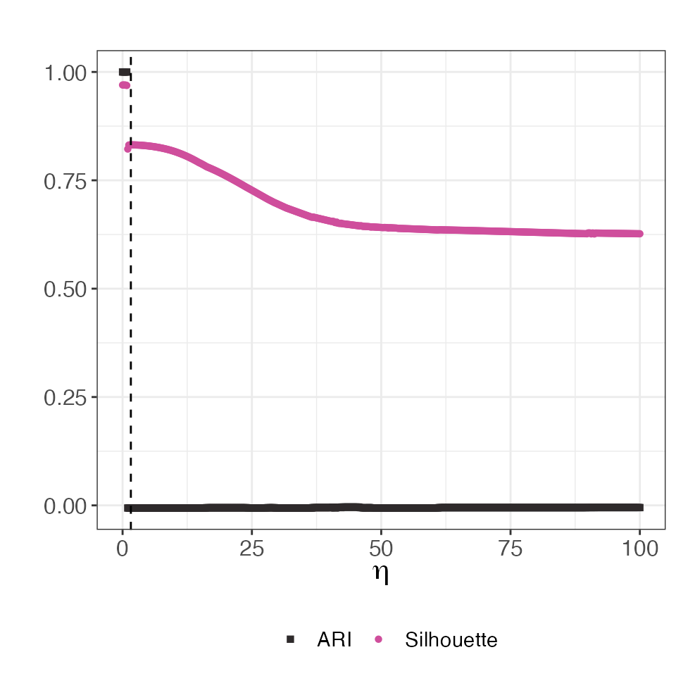
eta_opt <- eta_tuning_res$eta_opt
p_tuning <- eta_tuning_res$plot+scale_color_cosmic()+labs(title = expression("ARI/Silhouette vs candidate"~eta))
#> Scale for colour is already present.
#> Adding another scale for colour, which will replace the existing scale.
meta_all <- setNames(data.frame(matrix(ncol = ncol(meta_t)+3, nrow = 0)), c(colnames(meta_t), "cPC1","cPC2","eta"))
for (eta_use in c(eta_opt, seq(from = min(eta_range), to = max(eta_range), length.out = 3))) {
meta_tmp <- meta_t
meta_tmp$cPC1 <- Xt %*% eigen(cov(Xt)-eta_use*cov(Xa))$vectors[,1]
meta_tmp$cPC2 <- Xt %*% eigen(cov(Xt)-eta_use*cov(Xa))$vectors[,2]
meta_tmp$eta <- paste0("eta==",eta_use)
meta_all <- rbind(meta_all, meta_tmp)
}
meta_all$eta <- factor(meta_all$eta, levels=c("eta==0","eta==1.6","eta==50","eta==100"))
p_eta <- ggplot(meta_all)+
geom_point(aes(x = cPC1, y = cPC2, color = interesting, shape = nuisance))+
facet_wrap(vars(eta), labeller = label_parsed, scales= "free")+
theme_bw()+
scale_color_aaas()+
scale_shape_manual(values = c(1, 15))+
theme(
strip.background = element_rect(fill = "lightblue", color = "black"),
strip.text = element_text(color = "black", face = "bold", size = 14),
text = element_text(size = 14), # Adjust text size
axis.title = element_text(size = 16), # Adjust axis title size
axis.text = element_text(size = 12), # Adjust axis text size
legend.position = "bottom")
print(p_eta)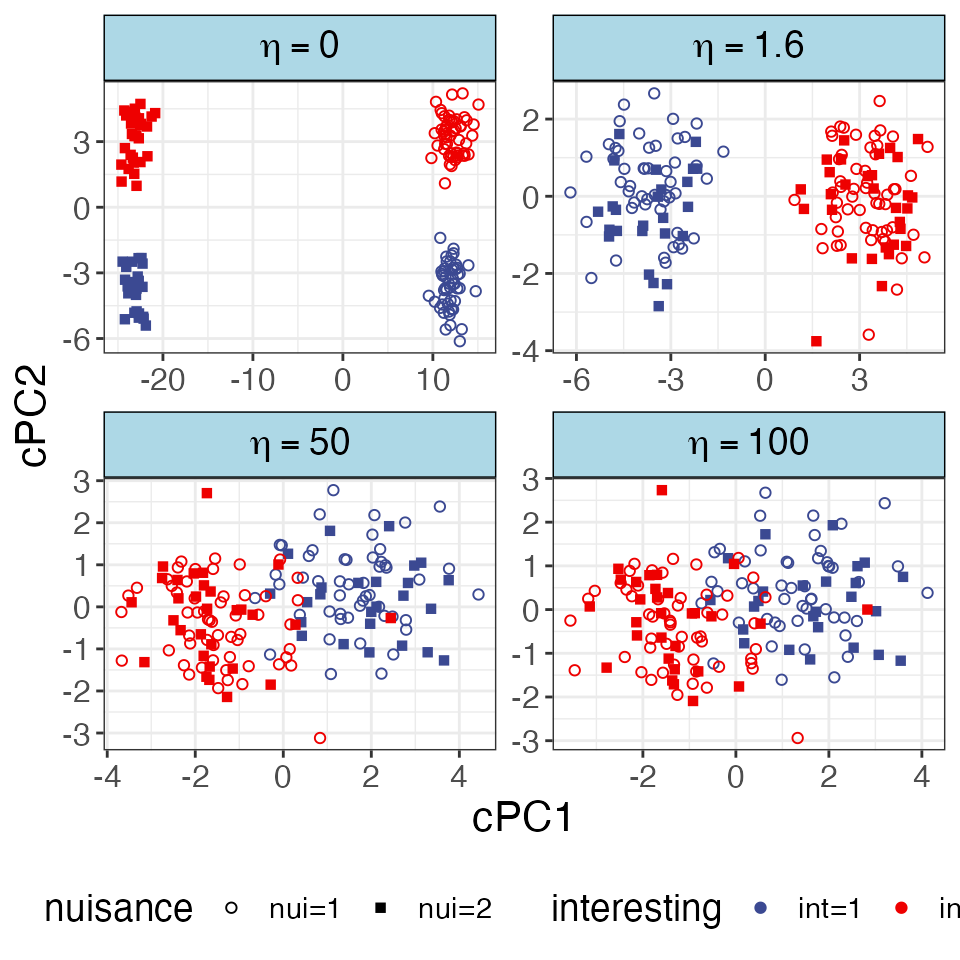
## split the figures into main figure and supp figure
p_eta_main <- ggplot(meta_all[meta_all$eta %in% c("eta==0","eta==1.6"),])+
geom_point(aes(x = cPC1, y = cPC2, color = interesting, shape = nuisance))+
facet_wrap(vars(eta), labeller = label_parsed, scales= "free")+
theme_bw()+
scale_color_aaas()+
scale_shape_manual(values = c(1, 15))+
theme(
strip.background = element_rect(fill = "lightblue", color = "black"),
strip.text = element_text(color = "black", face = "bold", size = 14),
text = element_text(size = 14), # Adjust text size
axis.title = element_text(size = 16), # Adjust axis title size
axis.text = element_text(size = 12), # Adjust axis text size
legend.position = "bottom")
p_eta_supp <- ggplot(meta_all[!(meta_all$eta %in% c("eta==0","eta==1.6")),])+
geom_point(aes(x = cPC1, y = cPC2, color = interesting, shape = nuisance))+
facet_wrap(vars(eta), labeller = label_parsed, scales= "free")+
theme_bw()+
scale_color_aaas()+
scale_shape_manual(values = c(1, 15))+
theme(
strip.background = element_rect(fill = "lightblue", color = "black"),
strip.text = element_text(color = "black", face = "bold", size = 14),
text = element_text(size = 14), # Adjust text size
axis.title = element_text(size = 16), # Adjust axis title size
axis.text = element_text(size = 12), # Adjust axis text size
legend.position = "bottom")
# ggsave("../inst/SavedFigures/sim_etaTuningEg_Main.pdf",
# plot = ggarrange(p_tuning+xlim(0,3), p_eta_main, ncol = 2, widths = c(1,1.6),
# labels ="AUTO"), width = 12, height = 4.5, units = "in")
# ggsave("../inst/SavedFigures/sim_etaTuningEg_Supp.pdf",
# plot = ggarrange(p_tuning, p_eta_supp, ncol = 2, widths = c(1,1.6),
# labels ="AUTO"), width = 12, height = 4.5, units = "in")
set.seed(111)
mu2_candidates <- c(1, 2)
p1_candidates <- c(5, 10)
eta_range <- seq(0.1, 50, 0.2)
Sigmat_candidates <- c("Identity", "Toep(0.4)", "Toep(0.5)")
results <- setNames(data.frame(matrix(ncol = 8, nrow = 0)),
c("ARI_ctst_interesting", "ARI_ctst_nuisance",
"ARI_trt_interesting", "ARI_trt_nuisance","eta",
"mu2", "p1", "Sigmat"))
for (mu2 in mu2_candidates) {
for (p1 in p1_candidates) {
for(Sigmat in Sigmat_candidates){
p2 <- 10
p <- p1+p2
Sigma_t <- case_when(Sigmat == "Identity" ~ diag(1, p),
Sigmat == "Toep(0.4)" ~ toeplitz(0.4^(0:(p-1))),
Sigmat == "Toep(0.5)" ~ toeplitz(0.5^(0:(p-1))))
res <- sim_CSC(n11 = 50, n12 = 25, n21 = 55, n22 = 30, m1tilde = 20, m2tilde = 30,
mu1 = 5, mu2 = mu2, theta1 = -5, theta2 = 6, p1 = p1, p2 = p2,
sigma_t = 1, sigma_a = 1,
Sigma_t = Sigma_t, Sigma_a = NULL,
eta = eta_range, repetition = 50, save_plot = FALSE)
res$mu2 <- mu2
res$mu <- abs(mu2-5)
res$p1 <- p1
res$Sigmat <- Sigmat
results <- rbind(results, res)
}
}
}
# save(results, file = "../inst/SavedData/sim_cPCA.RData")
load(file = "../inst/SavedData/sim_cPCA.RData")
plot_results <- pivot_longer(results, 1:4, names_to = "Type", values_to = "ARI")
plot_results$Analysis <- sapply(plot_results$Type, function(x){strsplit(x,"_")[[1]][2]})
plot_results$Cluster <- sapply(plot_results$Type, function(x){strsplit(x,"_")[[1]][3]})
plot_results$Analysis <- ifelse(plot_results$Analysis=="ctst","Contrastive","Target-only")
plot_results$Cluster <- ifelse(plot_results$Cluster=="interesting","Interesting","Nuisance")
plot_results$eta <- paste("eta==", plot_results$eta, sep = "")
plot_results$mu <- paste("mu==", plot_results$mu, sep = "")
plot_results$p1 <- paste("p[1]==", plot_results$p1, sep = "")
plot_results <- plot_results %>% group_by(mu, p1, Sigmat, Analysis, Cluster) %>%
summarise(Average_ARI = mean(ARI), SE_ARI = sd(ARI), covarage_high = mean(ARI >= 0.9), covarage_low = mean(ARI <= 0.1))
#> `summarise()` has regrouped the output.
#> ℹ Summaries were computed grouped by mu, p1, Sigmat, Analysis, and Cluster.
#> ℹ Output is grouped by mu, p1, Sigmat, and Analysis.
#> ℹ Use `summarise(.groups = "drop_last")` to silence this message.
#> ℹ Use `summarise(.by = c(mu, p1, Sigmat, Analysis, Cluster))` for per-operation
#> grouping (`?dplyr::dplyr_by`) instead.
print(knitr::kable(plot_results, format = "markdown", digits = 3))
#>
#>
#> |mu |p1 |Sigmat |Analysis |Cluster | Average_ARI| SE_ARI| covarage_high| covarage_low|
#> |:-----|:--------|:---------|:-----------|:-----------|-----------:|------:|-------------:|------------:|
#> |mu==3 |p[1]==10 |Identity |Contrastive |Interesting | 1.000| 0.000| 1.00| 0|
#> |mu==3 |p[1]==10 |Identity |Contrastive |Nuisance | -0.006| 0.000| 0.00| 1|
#> |mu==3 |p[1]==10 |Identity |Target-only |Interesting | -0.006| 0.000| 0.00| 1|
#> |mu==3 |p[1]==10 |Identity |Target-only |Nuisance | 1.000| 0.000| 1.00| 0|
#> |mu==3 |p[1]==10 |Toep(0.4) |Contrastive |Interesting | 0.996| 0.009| 1.00| 0|
#> |mu==3 |p[1]==10 |Toep(0.4) |Contrastive |Nuisance | -0.006| 0.000| 0.00| 1|
#> |mu==3 |p[1]==10 |Toep(0.4) |Target-only |Interesting | -0.006| 0.000| 0.00| 1|
#> |mu==3 |p[1]==10 |Toep(0.4) |Target-only |Nuisance | 1.000| 0.000| 1.00| 0|
#> |mu==3 |p[1]==10 |Toep(0.5) |Contrastive |Interesting | 0.993| 0.014| 1.00| 0|
#> |mu==3 |p[1]==10 |Toep(0.5) |Contrastive |Nuisance | -0.006| 0.000| 0.00| 1|
#> |mu==3 |p[1]==10 |Toep(0.5) |Target-only |Interesting | -0.006| 0.000| 0.00| 1|
#> |mu==3 |p[1]==10 |Toep(0.5) |Target-only |Nuisance | 1.000| 0.000| 1.00| 0|
#> |mu==3 |p[1]==5 |Identity |Contrastive |Interesting | 0.998| 0.007| 1.00| 0|
#> |mu==3 |p[1]==5 |Identity |Contrastive |Nuisance | -0.006| 0.000| 0.00| 1|
#> |mu==3 |p[1]==5 |Identity |Target-only |Interesting | -0.006| 0.000| 0.00| 1|
#> |mu==3 |p[1]==5 |Identity |Target-only |Nuisance | 1.000| 0.000| 1.00| 0|
#> |mu==3 |p[1]==5 |Toep(0.4) |Contrastive |Interesting | 0.968| 0.025| 1.00| 0|
#> |mu==3 |p[1]==5 |Toep(0.4) |Contrastive |Nuisance | -0.006| 0.000| 0.00| 1|
#> |mu==3 |p[1]==5 |Toep(0.4) |Target-only |Interesting | -0.006| 0.000| 0.00| 1|
#> |mu==3 |p[1]==5 |Toep(0.4) |Target-only |Nuisance | 1.000| 0.000| 1.00| 0|
#> |mu==3 |p[1]==5 |Toep(0.5) |Contrastive |Interesting | 0.939| 0.039| 0.92| 0|
#> |mu==3 |p[1]==5 |Toep(0.5) |Contrastive |Nuisance | -0.006| 0.001| 0.00| 1|
#> |mu==3 |p[1]==5 |Toep(0.5) |Target-only |Interesting | -0.006| 0.000| 0.00| 1|
#> |mu==3 |p[1]==5 |Toep(0.5) |Target-only |Nuisance | 1.000| 0.000| 1.00| 0|
#> |mu==4 |p[1]==10 |Identity |Contrastive |Interesting | 1.000| 0.000| 1.00| 0|
#> |mu==4 |p[1]==10 |Identity |Contrastive |Nuisance | -0.006| 0.000| 0.00| 1|
#> |mu==4 |p[1]==10 |Identity |Target-only |Interesting | -0.006| 0.000| 0.00| 1|
#> |mu==4 |p[1]==10 |Identity |Target-only |Nuisance | 1.000| 0.000| 1.00| 0|
#> |mu==4 |p[1]==10 |Toep(0.4) |Contrastive |Interesting | 1.000| 0.000| 1.00| 0|
#> |mu==4 |p[1]==10 |Toep(0.4) |Contrastive |Nuisance | -0.006| 0.000| 0.00| 1|
#> |mu==4 |p[1]==10 |Toep(0.4) |Target-only |Interesting | -0.006| 0.000| 0.00| 1|
#> |mu==4 |p[1]==10 |Toep(0.4) |Target-only |Nuisance | 1.000| 0.000| 1.00| 0|
#> |mu==4 |p[1]==10 |Toep(0.5) |Contrastive |Interesting | 1.000| 0.004| 1.00| 0|
#> |mu==4 |p[1]==10 |Toep(0.5) |Contrastive |Nuisance | -0.006| 0.000| 0.00| 1|
#> |mu==4 |p[1]==10 |Toep(0.5) |Target-only |Interesting | -0.006| 0.000| 0.00| 1|
#> |mu==4 |p[1]==10 |Toep(0.5) |Target-only |Nuisance | 1.000| 0.000| 1.00| 0|
#> |mu==4 |p[1]==5 |Identity |Contrastive |Interesting | 1.000| 0.000| 1.00| 0|
#> |mu==4 |p[1]==5 |Identity |Contrastive |Nuisance | -0.006| 0.000| 0.00| 1|
#> |mu==4 |p[1]==5 |Identity |Target-only |Interesting | -0.006| 0.000| 0.00| 1|
#> |mu==4 |p[1]==5 |Identity |Target-only |Nuisance | 1.000| 0.000| 1.00| 0|
#> |mu==4 |p[1]==5 |Toep(0.4) |Contrastive |Interesting | 0.998| 0.008| 1.00| 0|
#> |mu==4 |p[1]==5 |Toep(0.4) |Contrastive |Nuisance | -0.006| 0.000| 0.00| 1|
#> |mu==4 |p[1]==5 |Toep(0.4) |Target-only |Interesting | -0.006| 0.000| 0.00| 1|
#> |mu==4 |p[1]==5 |Toep(0.4) |Target-only |Nuisance | 1.000| 0.000| 1.00| 0|
#> |mu==4 |p[1]==5 |Toep(0.5) |Contrastive |Interesting | 0.994| 0.012| 1.00| 0|
#> |mu==4 |p[1]==5 |Toep(0.5) |Contrastive |Nuisance | -0.006| 0.000| 0.00| 1|
#> |mu==4 |p[1]==5 |Toep(0.5) |Target-only |Interesting | -0.006| 0.000| 0.00| 1|
#> |mu==4 |p[1]==5 |Toep(0.5) |Target-only |Nuisance | 1.000| 0.000| 1.00| 0|
p_cPCA <- ggplot(plot_results, aes(x = Cluster, y = Average_ARI))+
geom_point(aes(color = Analysis), stat="identity", position ="dodge")+
geom_errorbar(aes(ymin = Average_ARI - SE_ARI, ymax = Average_ARI + SE_ARI), linewidth = 0.5) +
facet_nested(Sigmat ~ mu + p1, labeller = label_parsed)+
labs(x = "", y="Average ARI")+
theme_bw()+
theme(
panel.grid = element_blank(),
strip.background = element_rect(fill = "lightblue", color = "black"),
strip.text = element_text(color = "black", face = "bold", size = 14),
text = element_text(size = 14), # Adjust text size
axis.title = element_text(size = 16), # Adjust axis title size
axis.text = element_text(size = 12), # Adjust axis text size
legend.position = "bottom"
)+
scale_color_aaas()
print(p_cPCA)
#> Warning: Width not defined
#> ℹ Set with `position_dodge(width = ...)`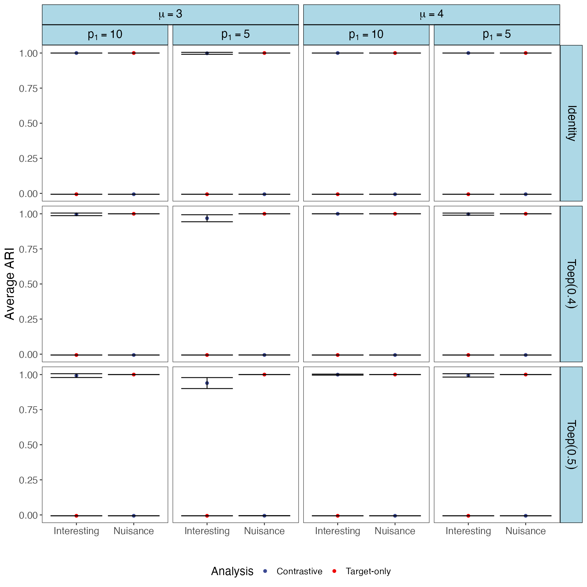
# ggsave("../inst/SavedFigures/sim_cPCA.pdf", p_cPCA, width = 6, height = 9, units = "in")
set.seed(111)
mu2_candidates <- c(1, 2)
p3_candidates <- c(100, 300)
eta_range <- seq(0.1, 10, 0.5)
Sigmat_candidates <- c("Identity", "Toep(0.4)", "Toep(0.5)")
results <- setNames(data.frame(matrix(ncol = 8, nrow = 0)),
c("ARI_ctst_interesting", "ARI_ctst_nuisance",
"ARI_trt_interesting", "ARI_trt_nuisance","eta",
"mu2", "p3", "Sigmat"))
for (mu2 in mu2_candidates) {
for (p3 in p3_candidates) {
for(Sigmat in Sigmat_candidates){
p1 <- 5
p2 <- 10
p <- p1+p2+p3
Sigma_t <- case_when(Sigmat == "Identity" ~ diag(1, p),
Sigmat == "Toep(0.4)" ~ toeplitz(0.4^(0:(p-1))),
Sigmat == "Toep(0.5)" ~ toeplitz(0.5^(0:(p-1))))
res <- sim_sCSC(n11 = 50, n12 = 25, n21 = 55, n22 = 30, m1tilde = 20, m2tilde = 30,
mu1 = 5, mu2 = mu2, theta1 = -5, theta2 = 6, p1 = p1, p2 = p2, p3 = p3,
sigma_t = 1, sigma_a = 1, Sigma_t = Sigma_t, Sigma_a = NULL,
eta = eta_range, repetition = 50)
res$mu2 <- mu2
res$mu <- abs(mu2-5)
res$p3 <- p3
res$Sigmat <- Sigmat
results <- rbind(results, res)
}
}
}
# save(results, file = "../inst/SavedData/sim_scPCA.RData")
load(file = "../inst/SavedData/sim_scPCA.RData")
plot_results <- pivot_longer(results, 1:4, names_to = "Type", values_to = "ARI")
plot_results$Analysis <- sapply(plot_results$Type, function(x){strsplit(x,"_")[[1]][2]})
plot_results$Cluster <- sapply(plot_results$Type, function(x){strsplit(x,"_")[[1]][3]})
plot_results$Analysis <- ifelse(plot_results$Analysis=="ctst","Contrastive","Target-only")
plot_results$Cluster <- ifelse(plot_results$Cluster=="interesting","Interesting","Nuisance")
plot_results$eta <- paste("eta==", plot_results$eta, sep = "")
plot_results$mu <- paste("mu==", plot_results$mu, sep = "")
plot_results$p3 <- paste("p[3]==", plot_results$p3, sep = "")
plot_results <- plot_results %>% group_by(mu, p3, Sigmat, Analysis, Cluster) %>%
summarise(Average_ARI = mean(ARI), SE_ARI = sd(ARI), covarage_high = mean(ARI >= 0.9), covarage_low = mean(ARI <= 0.1))
#> `summarise()` has regrouped the output.
#> ℹ Summaries were computed grouped by mu, p3, Sigmat, Analysis, and Cluster.
#> ℹ Output is grouped by mu, p3, Sigmat, and Analysis.
#> ℹ Use `summarise(.groups = "drop_last")` to silence this message.
#> ℹ Use `summarise(.by = c(mu, p3, Sigmat, Analysis, Cluster))` for per-operation
#> grouping (`?dplyr::dplyr_by`) instead.
print(knitr::kable(plot_results, format = "markdown", digits = 3))
#>
#>
#> |mu |p3 |Sigmat |Analysis |Cluster | Average_ARI| SE_ARI| covarage_high| covarage_low|
#> |:-----|:---------|:---------|:-----------|:-----------|-----------:|------:|-------------:|------------:|
#> |mu==3 |p[3]==100 |Identity |Contrastive |Interesting | 0.957| 0.199| 0.96| 0.04|
#> |mu==3 |p[3]==100 |Identity |Contrastive |Nuisance | 0.034| 0.199| 0.04| 0.96|
#> |mu==3 |p[3]==100 |Identity |Target-only |Interesting | -0.006| 0.000| 0.00| 1.00|
#> |mu==3 |p[3]==100 |Identity |Target-only |Nuisance | 1.000| 0.000| 1.00| 0.00|
#> |mu==3 |p[3]==100 |Toep(0.4) |Contrastive |Interesting | 0.949| 0.142| 0.94| 0.02|
#> |mu==3 |p[3]==100 |Toep(0.4) |Contrastive |Nuisance | 0.014| 0.142| 0.02| 0.98|
#> |mu==3 |p[3]==100 |Toep(0.4) |Target-only |Interesting | -0.006| 0.000| 0.00| 1.00|
#> |mu==3 |p[3]==100 |Toep(0.4) |Target-only |Nuisance | 1.000| 0.000| 1.00| 0.00|
#> |mu==3 |p[3]==100 |Toep(0.5) |Contrastive |Interesting | 0.932| 0.141| 0.90| 0.02|
#> |mu==3 |p[3]==100 |Toep(0.5) |Contrastive |Nuisance | 0.014| 0.142| 0.02| 0.98|
#> |mu==3 |p[3]==100 |Toep(0.5) |Target-only |Interesting | -0.006| 0.000| 0.00| 1.00|
#> |mu==3 |p[3]==100 |Toep(0.5) |Target-only |Nuisance | 1.000| 0.000| 1.00| 0.00|
#> |mu==3 |p[3]==300 |Identity |Contrastive |Interesting | 0.918| 0.275| 0.92| 0.08|
#> |mu==3 |p[3]==300 |Identity |Contrastive |Nuisance | 0.074| 0.276| 0.08| 0.92|
#> |mu==3 |p[3]==300 |Identity |Target-only |Interesting | -0.006| 0.000| 0.00| 1.00|
#> |mu==3 |p[3]==300 |Identity |Target-only |Nuisance | 1.000| 0.000| 1.00| 0.00|
#> |mu==3 |p[3]==300 |Toep(0.4) |Contrastive |Interesting | 0.912| 0.236| 0.94| 0.06|
#> |mu==3 |p[3]==300 |Toep(0.4) |Contrastive |Nuisance | 0.054| 0.241| 0.06| 0.94|
#> |mu==3 |p[3]==300 |Toep(0.4) |Target-only |Interesting | -0.006| 0.000| 0.00| 1.00|
#> |mu==3 |p[3]==300 |Toep(0.4) |Target-only |Nuisance | 1.000| 0.000| 1.00| 0.00|
#> |mu==3 |p[3]==300 |Toep(0.5) |Contrastive |Interesting | 0.864| 0.262| 0.82| 0.08|
#> |mu==3 |p[3]==300 |Toep(0.5) |Contrastive |Nuisance | 0.055| 0.241| 0.06| 0.94|
#> |mu==3 |p[3]==300 |Toep(0.5) |Target-only |Interesting | -0.006| 0.000| 0.00| 1.00|
#> |mu==3 |p[3]==300 |Toep(0.5) |Target-only |Nuisance | 1.000| 0.000| 1.00| 0.00|
#> |mu==4 |p[3]==100 |Identity |Contrastive |Interesting | 0.960| 0.199| 0.96| 0.04|
#> |mu==4 |p[3]==100 |Identity |Contrastive |Nuisance | 0.034| 0.199| 0.04| 0.96|
#> |mu==4 |p[3]==100 |Identity |Target-only |Interesting | -0.006| 0.000| 0.00| 1.00|
#> |mu==4 |p[3]==100 |Identity |Target-only |Nuisance | 1.000| 0.000| 1.00| 0.00|
#> |mu==4 |p[3]==100 |Toep(0.4) |Contrastive |Interesting | 0.937| 0.241| 0.94| 0.06|
#> |mu==4 |p[3]==100 |Toep(0.4) |Contrastive |Nuisance | 0.054| 0.241| 0.06| 0.94|
#> |mu==4 |p[3]==100 |Toep(0.4) |Target-only |Interesting | -0.006| 0.000| 0.00| 1.00|
#> |mu==4 |p[3]==100 |Toep(0.4) |Target-only |Nuisance | 1.000| 0.000| 1.00| 0.00|
#> |mu==4 |p[3]==100 |Toep(0.5) |Contrastive |Interesting | 0.914| 0.274| 0.92| 0.08|
#> |mu==4 |p[3]==100 |Toep(0.5) |Contrastive |Nuisance | 0.074| 0.276| 0.08| 0.92|
#> |mu==4 |p[3]==100 |Toep(0.5) |Target-only |Interesting | -0.006| 0.000| 0.00| 1.00|
#> |mu==4 |p[3]==100 |Toep(0.5) |Target-only |Nuisance | 1.000| 0.000| 1.00| 0.00|
#> |mu==4 |p[3]==300 |Identity |Contrastive |Interesting | 0.940| 0.241| 0.94| 0.06|
#> |mu==4 |p[3]==300 |Identity |Contrastive |Nuisance | 0.054| 0.241| 0.06| 0.94|
#> |mu==4 |p[3]==300 |Identity |Target-only |Interesting | -0.006| 0.000| 0.00| 1.00|
#> |mu==4 |p[3]==300 |Identity |Target-only |Nuisance | 1.000| 0.000| 1.00| 0.00|
#> |mu==4 |p[3]==300 |Toep(0.4) |Contrastive |Interesting | 0.939| 0.241| 0.94| 0.06|
#> |mu==4 |p[3]==300 |Toep(0.4) |Contrastive |Nuisance | 0.054| 0.241| 0.06| 0.94|
#> |mu==4 |p[3]==300 |Toep(0.4) |Target-only |Interesting | -0.006| 0.000| 0.00| 1.00|
#> |mu==4 |p[3]==300 |Toep(0.4) |Target-only |Nuisance | 1.000| 0.000| 1.00| 0.00|
#> |mu==4 |p[3]==300 |Toep(0.5) |Contrastive |Interesting | 0.896| 0.304| 0.90| 0.10|
#> |mu==4 |p[3]==300 |Toep(0.5) |Contrastive |Nuisance | 0.095| 0.305| 0.10| 0.90|
#> |mu==4 |p[3]==300 |Toep(0.5) |Target-only |Interesting | -0.006| 0.000| 0.00| 1.00|
#> |mu==4 |p[3]==300 |Toep(0.5) |Target-only |Nuisance | 1.000| 0.000| 1.00| 0.00|
p_scPCA <- ggplot(plot_results, aes(x = Cluster, y = Average_ARI))+
geom_point(aes(color = Analysis), stat="identity", position ="dodge")+
geom_errorbar(aes(ymin = Average_ARI - SE_ARI, ymax = Average_ARI + SE_ARI), linewidth = 0.5) +
facet_nested(Sigmat ~ mu + p3, labeller = label_parsed)+
labs(x = "", y="Average ARI")+
theme_bw()+
theme(
panel.grid = element_blank(),
strip.background = element_rect(fill = "lightblue", color = "black"),
strip.text = element_text(color = "black", face = "bold", size = 14),
text = element_text(size = 14), # Adjust text size
axis.title = element_text(size = 16), # Adjust axis title size
axis.text = element_text(size = 12), # Adjust axis text size
legend.position = "bottom"
)+
scale_color_aaas()
print(p_scPCA)
#> Warning: Width not defined
#> ℹ Set with `position_dodge(width = ...)`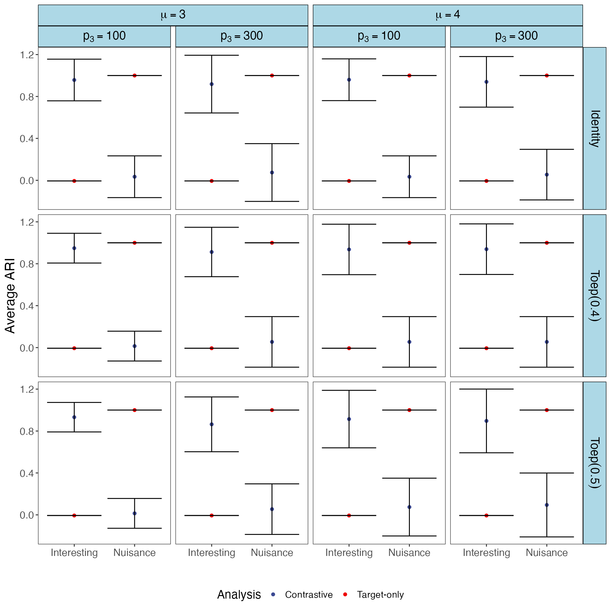
# ggsave("../inst/SavedFigures/sim_scPCA.pdf", p_scPCA, width = 6, height = 9, units = "in")
set.seed(2024)
all_results <- list()
scenarios_dense <- expand.grid(p_val = c(40, 80), mu_val = c(1.5, 3))
for(i in 1:nrow(scenarios_dense)) {
p_val <- scenarios_dense$p_val[i]
mu_val <- scenarios_dense$mu_val[i]
cat(sprintf("\nRunning 3CA (p = q = %d, mu = %.1f)...\n", p_val, mu_val))
dense_res <- sim_3CA(nt = 200, na = 200, p = p_val, q = p_val, mu = mu_val,
theta = 400, eta_true = 2.5, repetition = 50)
dense_res$Method <- "3CA"
dense_res$Dimension_p <- p_val
dense_res$mu_or_s <- mu_val
dense_res$TPR_Target <- NA; dense_res$FPR_Target <- NA
dense_res$TPR_Contrastive <- NA; dense_res$FPR_Contrastive <- NA
all_results[[paste0("dense_p", p_val, "_mu", mu_val)]] <- dense_res
}
scenarios_sparse <- expand.grid(p_val = c(300, 500), s_val = c(10, 20))
for(i in 1:nrow(scenarios_sparse)) {
p_val <- scenarios_sparse$p_val[i]
s_val <- scenarios_sparse$s_val[i]
cat(sprintf("Running s3CA (p = q = %d, number of non-zero elements s = %d)...\n", p_val, s_val))
sparse_res <- sim_s3CA(nt = 200, na = 200, p = p_val, q = p_val, s = s_val,
mu = 3, theta = 400, eta_true = 2.5, repetition = 50)
sparse_res$Method <- "s3CA"
sparse_res$Dimension_p <- p_val
sparse_res$mu_or_s <- s_val
all_results[[paste0("sparse_p", p_val, "_s", s_val)]] <- sparse_res
}
final_data <- do.call(rbind, all_results)
save(final_data, file = "../inst/SavedData/sim_3CA_s3CA.RData")
load(file = "../inst/SavedData/sim_3CA_s3CA.RData")
summary_table <- final_data %>%
group_by(Method, Dimension_p, mu_or_s) %>%
summarize(
Mean_Eta = mean(Eta_Est),
SD_Eta = sd(Eta_Est),
`Eta_Hat_SD` = sprintf("%.3f (%.3f)", Mean_Eta, SD_Eta),
ARI_TargetOnly = mean(ARI_Target),
ARI_Contrastive = mean(ARI_Contrastive),
TPR_TargetOnly = mean(TPR_Target, na.rm = TRUE),
FPR_TargetOnly = mean(FPR_Target, na.rm = TRUE),
TPR_Contrastive = mean(TPR_Contrastive, na.rm = TRUE),
FPR_Contrastive = mean(FPR_Contrastive, na.rm = TRUE),
.groups = "drop"
) %>%
dplyr::select(-Mean_Eta, -SD_Eta) %>%
arrange(desc(Method), Dimension_p, mu_or_s)
print(knitr::kable(summary_table, digits = 3, format = "markdown"))
#>
#>
#> |Method | Dimension_p| mu_or_s|Eta_Hat_SD | ARI_TargetOnly| ARI_Contrastive| TPR_TargetOnly| FPR_TargetOnly| TPR_Contrastive| FPR_Contrastive|
#> |:------|-----------:|-------:|:-------------|--------------:|---------------:|--------------:|--------------:|---------------:|---------------:|
#> |s3CA | 300| 10.0|2.539 (0.296) | 0.001| 1.000| 0.691| 0.117| 1.000| 0.004|
#> |s3CA | 300| 20.0|2.561 (0.426) | 0.000| 1.000| 0.691| 0.222| 1.000| 0.005|
#> |s3CA | 500| 10.0|2.528 (0.364) | 0.000| 0.880| 0.545| 0.088| 0.909| 0.007|
#> |s3CA | 500| 20.0|2.394 (0.367) | -0.001| 1.000| 0.505| 0.120| 1.000| 0.003|
#> |3CA | 40| 1.5|2.585 (0.346) | -0.001| 0.773| NaN| NaN| NaN| NaN|
#> |3CA | 40| 3.0|2.586 (0.410) | 0.017| 0.990| NaN| NaN| NaN| NaN|
#> |3CA | 80| 1.5|2.606 (0.350) | 0.001| 0.944| NaN| NaN| NaN| NaN|
#> |3CA | 80| 3.0|2.725 (0.370) | 0.073| 1.000| NaN| NaN| NaN| NaN|Papalexi E, Mimitou E P, Butler A W, et al. Characterizing the molecular regulation of inhibitory immune checkpoints with multimodal single-cell screens[J]. Nature genetics, 2021, 53(3): 322-331.
This dataset comes from an ECCITE-seq pooled CRISPR-Cas9 screen in IFN-γ-stimulated THP-1 cells. For each single cell, it jointly measures gene expression, surface protein abundance including PD-L1, and the assigned gRNA perturbation. The screen targets genes involved in IFN-γ signaling and immune checkpoint regulation, with non-targeting controls, making it useful for studying how genetic perturbations affect transcriptomic and PD-L1 protein responses while accounting for confounders such as cell cycle, batch effects, and cellular stress.
Raw counts were normalized using standard log-normalization for RNA and Centered Log-Ratio (CLR) normalization for ADT. Variable features (n=1,000) were identified, and data were scaled using the Seurat package to zero mean and unit variance.
Standard PCA revealed that the primary source of variation in the dataset was the cell cycle phase, which confounded the biological signals associated with CRISPR perturbations. To correct for this, we applied Contrastive PCA (cPCA). cPCA identifies a low-dimensional subspace that maximizes the variance in a target dataset (cells with specific gene knockouts) while minimizing the variance in a background dataset (Non-Targeting control cells).
We defined the Target group () as cells carrying gRNAs for IFN pathway components (IFNGR1, IFNGR2, JAK2, STAT1, IRF1) and the Ancillary group () as cells carrying Non-Targeting (NT) gRNAs. The cPCA solution was obtained by performing eigenvalue decomposition on the contrastive covariance matrix:
A contrastive hyperparameter of was selected to effectively suppress cell-cycle-driven variance. The resulting contrastive Principal Components (cPCs) were used for visualization and k-means clustering ().
To validate the biological relevance of the cPCA clusters, we employed two orthogonal methods:
Protein Validation: We mapped the expression of PD-L1 surface protein onto the cPCA latent space. Since PD-L1 expression is upregulated by the IFN- pathway, true genetic knockouts of pathway components should exhibit reduced PD-L1 levels compared to wild-type cells.
Perturbation Signature Classification (Mixscape): We utilized the Mixscape algorithm (Papalexi et al., 2021) to classify cells into “Perturbed” (KO) or “Non-Perturbed/Escape” (NP) states. This classification was projected onto the cPCA space to assess whether cPCA correctly resolved phenotypic heterogeneity.
While standard PCA was dominated by cell cycle effects (G1/S/G2M separation), cPCA successfully removed this background variation, revealing a structured “L-shaped” topology in the latent space. The analysis identified three distinct states:
Cluster 1 (Upstream Blockade): Composed of cells perturbed for IFNGR1, IFNGR2, JAK2, and STAT1. These genes represent the receptor and immediate signaling complex of the IFN- pathway.
Cluster 2 (Downstream Blockade): Composed of cells perturbed for IRF1, a transcription factor downstream of the JAK-STAT complex, indicating a distinct transcriptomic response compared to upstream receptor blockade.
Cluster 3 (Central/Wild-Type State): A central cluster overlapping with the origin.
A significant proportion of cells carrying targeting gRNAs clustered in the central region, indistinguishable from the Non-Targeting baseline. We hypothesized these were “escape” cells that harbored the gRNA but failed to undergo functional genetic knockout.
Mixscape Confirmation: Projection of Mixscape classifications confirmed that the “independent” clusters (Upstream and Downstream) were populated by cells classified as “Perturbed (KO)” (red points), while the central overlapping region was populated by cells classified as “Escape (NP)” (grey points).
Protein Validation: Orthogonal ADT data demonstrated that cells in the Upstream and Downstream clusters exhibited significantly reduced PD-L1 protein levels, whereas cells in the central overlap region maintained high PD-L1 levels comparable to wild-type controls.
# ==============================================================================
# Module 1: Setup and Data Loading
# ==============================================================================
# Load Data
data("thp1.eccite")
eccite <- UpdateSeuratObject(thp1.eccite)
#> Validating object structure
#> Updating object slots
#> Ensuring keys are in the proper structure
#> Warning: Assay RNA changing from Assay to Assay
#> Warning: Assay ADT changing from Assay to Assay
#> Warning: Assay HTO changing from Assay to Assay
#> Warning: Assay GDO changing from Assay to Assay
#> Ensuring keys are in the proper structure
#> Ensuring feature names don't have underscores or pipes
#> Updating slots in RNA
#> Updating slots in ADT
#> Updating slots in HTO
#> Updating slots in GDO
#> Validating object structure for Assay 'RNA'
#> Validating object structure for Assay 'ADT'
#> Validating object structure for Assay 'HTO'
#> Validating object structure for Assay 'GDO'
#> Object representation is consistent with the most current Seurat version
# ==============================================================================
# Module 2: Preprocessing (RNA & ADT)
# Standard Seurat workflow to normalize and scale data
# ==============================================================================
# 1. RNA Processing
DefaultAssay(eccite) <- "RNA"
eccite <- NormalizeData(eccite) %>%
FindVariableFeatures(nfeatures = 1000) %>%
ScaleData() %>%
RunPCA(verbose = FALSE) %>%
RunUMAP(dims = 1:40, verbose = FALSE)
#> Centering and scaling data matrix
#> Warning: The default method for RunUMAP has changed from calling Python UMAP via reticulate to the R-native UWOT using the cosine metric
#> To use Python UMAP via reticulate, set umap.method to 'umap-learn' and metric to 'correlation'
#> This message will be shown once per session
# 2. ADT (Protein) Processing - CLR Normalization
DefaultAssay(eccite) <- "ADT"
eccite <- NormalizeData(eccite, normalization.method = "CLR", margin = 2) %>%
ScaleData()
#> Normalizing across cells
#> Centering and scaling data matrix
# 3. Extract Scaled Matrices for cPCA
# Transpose to N_cells x N_genes format
rna_matrix_final <- t(GetAssayData(eccite, assay = "RNA", layer = "scale.data"))
adt_matrix_final <- t(GetAssayData(eccite, assay = "ADT", layer = "scale.data"))
# Ensure matrices are dense and aligned
rna_matrix_final <- as.matrix(rna_matrix_final)
adt_matrix_final <- as.matrix(adt_matrix_final)
meta_data <- eccite@meta.data
# Sanity Check: Alignment
stopifnot(all(rownames(rna_matrix_final) == rownames(adt_matrix_final)))
stopifnot(all(rownames(meta_data) == rownames(rna_matrix_final)))
# ==============================================================================
# Module 3: Contrastive PCA (cPCA) Setup & Execution
# Goal: Isolate perturbation signals by removing background (NT) variation
# ==============================================================================
# 1. Define Subgroups
# Target Group (Xt): Cells with specific gene knockouts
# Background Group (Xa): Non-Targeting (NT) control cells
target_genes <- c("IFNGR1", "IFNGR2", "JAK2", "STAT1", "IRF1")
background_gene <- "NT"
# Filter Metadata
sub_meta <- meta_data %>%
filter(gene %in% c(target_genes, background_gene)) %>%
dplyr::select(Treatment_Gene = gene, Treatment_Guide = guide_ID, Phase, Replicate = replicate)
# Filter Matrix
sub_matrix <- rna_matrix_final[rownames(sub_meta), ]
# Split into Target (Xt) and Background (Xa)
Xt_raw <- sub_matrix[sub_meta$Treatment_Gene != "NT", ]
meta_t <- sub_meta[sub_meta$Treatment_Gene != "NT",]
Xa_raw <- sub_matrix[sub_meta$Treatment_Gene == "NT", ]
meta_a <- sub_meta[sub_meta$Treatment_Gene == "NT",]
# 2. Feature Selection
# Remove genes with zero variance in either group to prevent division errors
keep_genes <- apply(Xt_raw, 2, var) > 0 & apply(Xa_raw, 2, var) > 0
Xt <- scale(Xt_raw[, keep_genes])
Xa <- scale(Xa_raw[, keep_genes])
print(paste("Features retained:", sum(keep_genes)))
#> [1] "Features retained: 989"
# 3. Run PCA on each group
pca_t <- prcomp(Xt, center = TRUE, scale. = TRUE)
pca_a <- prcomp(Xa, center = TRUE, scale. = TRUE)
plot_df_t <- cbind(as.data.frame(pca_t$x), meta_t)
plot_df_a <- cbind(as.data.frame(pca_a$x), meta_a)
p_t <- ggplot(plot_df_t, aes(x = PC1, y = PC2, color = Phase, shape = Treatment_Gene)) +
geom_point(alpha = 0.6, size = 2) +
theme_bw() +
labs(title = "Target-only", shape = "Perturbed genes")+
theme(panel.grid = element_blank(),
text = element_text(size = 14), # Adjust text size
axis.title = element_text(size = 16), # Adjust axis title size
axis.text = element_text(size = 12),
legend.position = "bottom")
p_a <- ggplot(plot_df_a, aes(x = PC1, y = PC2, color = Phase)) +
geom_point(alpha = 0.6, size = 2, shape = 6) +
theme_bw() +
labs(title = "Ancillary-only")+
theme(panel.grid = element_blank(),
text = element_text(size = 14), # Adjust text size
axis.title = element_text(size = 16), # Adjust axis title size
axis.text = element_text(size = 12),
legend.position = "bottom")
print(ggarrange(p_t,p_a, common.legend = TRUE,legend = "bottom", labels = "AUTO", align = "h"))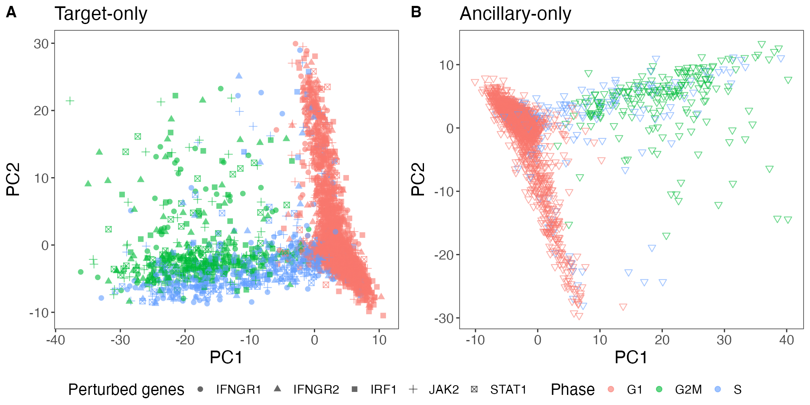
# p_motivation_1 <- ggplot(plot_df_t, aes(x = PC1, y = PC2, color = Phase, shape = Treatment_Gene)) +
# geom_point(alpha = 0.6, size = 2) +
# theme_bw() +
# labs(shape = "Perturbed genes")+
# theme(panel.grid = element_blank(),
# text = element_text(size = 14), # Adjust text size
# axis.title = element_text(size = 16), # Adjust axis title size
# axis.text = element_text(size = 12),
# legend.position = "bottom",
# legend.box = "vertical") # stack color legend over shape legend)+
# guides(
# color = guide_legend(nrow = 1, byrow = TRUE, order = 1),
# shape = guide_legend(nrow = 1, byrow = TRUE, order = 2)
# )
# ggsave("../inst/SavedFigures/ECCITE_score_ta.pdf",
# plot = ggarrange(p_t,p_a, common.legend = TRUE,legend = "bottom", labels = "AUTO", align = "h"),
# width = 10, height = 5)
# 4. Run cPCA Algorithm
# Formula: Eigen decomposition of (Cor(Xt) - eta * Cor(Xa))
# Eta (η) = 5 (Selected based on hyperparameter tuning to remove cell cycle)
eta_opt <- 5
contrastive_cov <- cor(Xt) - eta_opt * cor(Xa)
cpca_res <- eigen(contrastive_cov)
# 4. Project Data onto Contrastive Principal Components (cPCs)
cpca_coords <- as.data.frame(Xt %*% cpca_res$vectors[, 1:2])
colnames(cpca_coords) <- c("cPC1", "cPC2")
# Merge with Metadata
cpca_df <- cbind(cpca_coords, sub_meta[rownames(Xt), ])
# ==============================================================================
# Module 4: Clustering and Functional Annotation
# ==============================================================================
set.seed(123) # Reproducibility for K-means
cpca_df$Clusters <- factor(kmeans(cpca_df[, c("cPC1","cPC2")], centers = 3)$cluster)
# Annotate Functional Groups for Validation
cpca_df <- cpca_df %>%
mutate(Functional = case_when(
Treatment_Gene == "IRF1" ~ "Downstream",
Treatment_Gene %in% c("IFNGR1", "IFNGR2", "JAK2", "STAT1") ~ "Upstream",
TRUE ~ "Other" ),
Functional = factor(Functional,
levels = c("Upstream", "Downstream", "Other"))
)
# Visualization: The cPCA Space
p_c <- ggplot(cpca_df, aes(x = cPC1, y = cPC2, colour = Functional, shape = Clusters)) +
geom_point(alpha = 0.6, size = 2) +
theme_bw() +
scale_color_aaas()+
labs(shape = "Clusters", colour = "Functional")+
theme(panel.grid = element_blank(),
text = element_text(size = 14), # Adjust text size
axis.title = element_text(size = 16), # Adjust axis title size
axis.text = element_text(size = 12),
legend.position = "bottom")
print(p_c)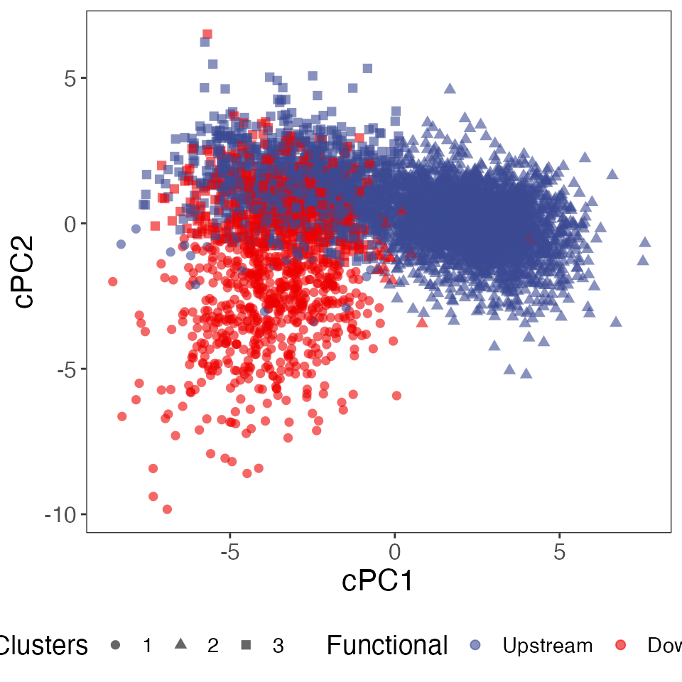
# ggsave("../inst/SavedFigures/ECCITE_score_tac.pdf",
# plot = ggarrange(p_t+theme(legend.box = "vertical"),
# p_a+theme(legend.box = "vertical"),
# p_c+theme(legend.box = "vertical")+labs(title = "Contrastive"),
# labels = "AUTO", align = "h", nrow = 1),
# width = 19, height = 8)
# ==============================================================================
# Module 5: Validation 1 - Protein Data (ADT)
# Hypothesis: True KO cells should have low PD-L1 protein expression
# ==============================================================================
# Map PD-L1 expression to cPCA coordinates
cpca_df$PDL1_Protein <- adt_matrix_final[rownames(cpca_df), "PDL1"]
p_val_protein <- ggplot(cpca_df, aes(x = cPC1, y = cPC2, color = PDL1_Protein)) +
geom_point(alpha = 0.8, size = 2) +
scale_color_viridis(option = "C", name = "PD-L1 (CLR Scaled)") +
theme_bw() +
theme(panel.grid = element_blank(),
text = element_text(size = 14), # Adjust text size
axis.title = element_text(size = 16), # Adjust axis title size
axis.text = element_text(size = 12),
legend.position = "bottom")
print(p_val_protein)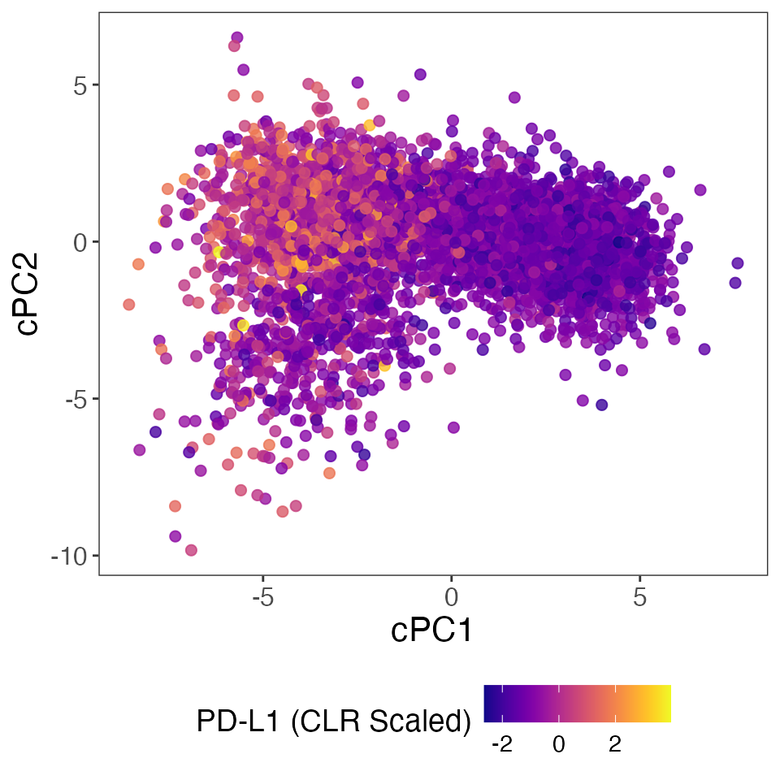
# ==============================================================================
# Module 6: Validation 2 - Mixscape Analysis (Perturbation Signature)
# Hypothesis: Center overlap region contains 'Escape' cells (Wild-type phenotype)
# ==============================================================================
# 1. Calculate Perturbation Signature
eccite <- CalcPerturbSig(
object = eccite,
assay = "RNA",
slot = "data",
gd.class ="gene",
nt.cell.class = "NT",
reduction = "pca",
ndims = 40,
num.neighbors = 20,
split.by = "replicate",
new.assay.name = "PRTB",
verbose = FALSE
)
#> Warning: Layer counts isn't present in the assay object; returning NULL
# 2. Run Mixscape Classification
DefaultAssay(eccite) <- 'PRTB'
VariableFeatures(object = eccite) <- VariableFeatures(object = eccite[["RNA"]])
eccite <- ScaleData(eccite, do.scale = F, do.center = T) %>%
RunPCA(reduction.name = 'prtbpca', reduction.key = "prtbpca" ,verbose = FALSE) %>%
RunUMAP(dims = 1:40, reduction = 'prtbpca', reduction.name = 'prtbumap', reduction.key = 'prtbumap', verbose = FALSE)
#> Centering data matrix
#> Warning: Keys should be one or more alphanumeric characters followed by an
#> underscore, setting key from prtbpca to prtbpca_
#> Warning: Keys should be one or more alphanumeric characters followed by an
#> underscore, setting key from prtbumap to prtbumap_
eccite <- RunMixscape(
object = eccite,
assay = "PRTB",
slot = "scale.data",
labels = "gene",
nt.class.name = "NT",
min.de.genes = 5,
iter.num = 10,
de.assay = "RNA",
prtb.type = "KO",
verbose = FALSE
)
#> For a (much!) faster implementation of the Wilcoxon Rank Sum Test,
#> (default method for FindMarkers) please install the presto package
#> --------------------------------------------
#> install.packages('devtools')
#> devtools::install_github('immunogenomics/presto')
#> --------------------------------------------
#> After installation of presto, Seurat will automatically use the more
#> efficient implementation (no further action necessary).
#> This message will be shown once per session
#> Warning: Different cells and/or features from existing assay PRTB
#> Warning: Layer counts isn't present in the assay object; returning NULL
#> number of iterations= 122
#> number of iterations= 263
#> number of iterations= 229
#> number of iterations= 228
#> number of iterations= 18
#> number of iterations= 9
#> number of iterations= 17
#> number of iterations= 11
#> number of iterations= 11
#> number of iterations= 63
#> number of iterations= 46
#> number of iterations= 46
#> number of iterations= 46
#> number of iterations= 20
#> number of iterations= 13
#> number of iterations= 12
#> number of iterations= 21
#> number of iterations= 19
#> number of iterations= 19
#> number of iterations= 52
#> number of iterations= 51
#> number of iterations= 50
#> number of iterations= 50
#> number of iterations= 39
#> number of iterations= 30
#> number of iterations= 29
#> number of iterations= 29
#> number of iterations= 20
#> number of iterations= 12
#> number of iterations= 12
#> number of iterations= 17
#> number of iterations= 15
#> number of iterations= 66
#> number of iterations= 33
# 3. Map Mixscape Labels to cPCA
mixscape_labels <- eccite$mixscape_class[rownames(cpca_df)]
cpca_df$Mixscape_Class <- mixscape_labels
# Simplify Labels for Plotting
cpca_df <- cpca_df %>%
mutate(Mixscape_Status = case_when(
grepl("KO", Mixscape_Class) ~ "Perturbed",
grepl("NP", Mixscape_Class) ~ "Escaped",
TRUE ~ "Other"
))
p_val_mixscape <- ggplot(cpca_df, aes(x = cPC1, y = cPC2, color = Mixscape_Status)) +
geom_point(alpha = 0.6, size = 2) +
scale_color_manual(values = c("Perturbed" = "#d62728",
"Escaped" = "grey80")) +
theme_bw() +
labs(color = "Mixscape status")+
theme(panel.grid = element_blank(),
text = element_text(size = 14), # Adjust text size
axis.title = element_text(size = 16), # Adjust axis title size
axis.text = element_text(size = 12),
legend.position = "bottom")
print(p_val_mixscape)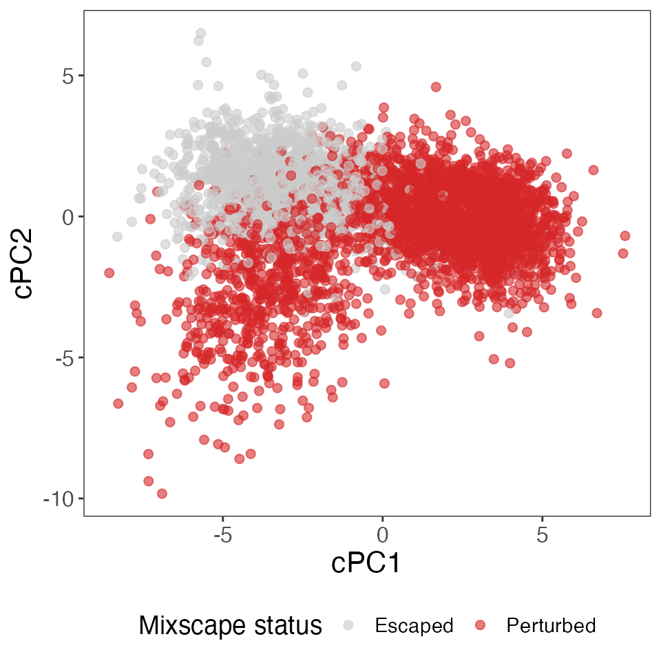
# ggsave("../inst/SavedFigures/ECCITE_val.pdf",
# plot = ggarrange(p_val_protein, p_val_mixscape,
# labels = "AUTO", align = "h", nrow = 1),
# width = 15, height = 8)
# ggsave("../inst/SavedFigures/ECCITE_c_val.pdf",
# plot = ggarrange(p_c+theme(legend.box = "vertical"),
# p_val_protein, p_val_mixscape,
# labels = "AUTO", align = "h", nrow = 1),
# width = 15, height = 8)To show that the cPCA results are robust to the choice of the contrastive hyperparameter (), we performed a sensitivity analysis by varying it across a range of values (1, 2, 3, 4, 5, 6, 8, 10). For each candidate value, we re-ran the cPCA algorithm and generated two plots, one is the cPCA latent space colored by functional annotation and shaped by k-means clusters, and the other is the PD-L1 protein expression mapped onto the cPCA space. This allowed us to assess whether the biological signal of interest (IFN pathway perturbations) remains consistently resolved across different values and whether the expected validation (reduced PD-L1 in true KO clusters) holds consistently.
# 1. Define Candidates for Sensitivity Analysis
eta_candidates <- c(1, 2, 3, 4, 5, 6, 8, 10)
# Lists to store plots
plots_row1_cpca <- list() # For Functional Clusters
plots_row2_protein <- list() # For PD-L1 Protein
# 2. Loop through each Eta value
for (eta_val in eta_candidates) {
# --- A. Run cPCA Algorithm ---
contrastive_cov <- cor(Xt) - eta_val * cor(Xa)
cpca_res <- eigen(contrastive_cov)
# --- B. Project Data ---
cpca_coords <- as.data.frame(Xt %*% cpca_res$vectors[, 1:2])
colnames(cpca_coords) <- c("cPC1", "cPC2")
# --- C. Prepare Dataframe ---
# Note: We match rows by name to ensure alignment
curr_df <- cbind(cpca_coords, sub_meta[rownames(Xt), ])
# Add Functional Annotation
curr_df$Clusters <- factor(kmeans(curr_df[, c("cPC1","cPC2")], centers = 3)$cluster)
curr_df <- curr_df %>%
mutate(Functional = case_when(
Treatment_Gene == "IRF1" ~ "Downstream",
Treatment_Gene %in% c("IFNGR1", "IFNGR2", "JAK2", "STAT1") ~ "Upstream",
TRUE ~ "Other"),
Functional = factor(Functional, levels = c("Upstream", "Downstream", "Other")))
# Add Protein Data
# Ensure we grab the correct rows
curr_df$PDL1_Protein <- adt_matrix_final[rownames(curr_df), "PDL1"]
# --- D. Generate Plot 1: Functional Clusters (Row 1) ---
p_cpca <- ggplot(curr_df, aes(x = cPC1, y = cPC2, colour = Functional, shape = Clusters)) +
geom_point(alpha = 0.6, size = 2) +
theme_bw() +
labs(title = bquote(eta == .(eta_val)),
subtitle = NULL) +
theme(legend.position = "none", # Hide legend for grid clarity
axis.title = element_blank(),
plot.title = element_text(size=11, face="bold"))+scale_color_aaas()
plots_row1_cpca[[as.character(eta_val)]] <- p_cpca
# --- E. Generate Plot 2: Protein Validation (Row 2) ---
p_protein <- ggplot(curr_df, aes(x = cPC1, y = cPC2, color = PDL1_Protein)) +
geom_point(alpha = 0.8, size = 2) +
scale_color_viridis(option = "C") +
theme_bw() +
labs(title = bquote(eta == .(eta_val)),
subtitle = NULL) +
theme(legend.position = "none", # Hide legend for grid clarity
axis.title = element_blank(),
plot.title = element_text(size=11, face="bold"))
plots_row2_protein[[as.character(eta_val)]] <- p_protein
}
# ==============================================================================
# Arrange 8 Figures (4 Columns x 4 Rows)
# ==============================================================================
# Use patchwork to arrange
final_grid <- wrap_plots(c(plots_row1_cpca, plots_row2_protein), ncol = 4, nrow = 4)
print(final_grid)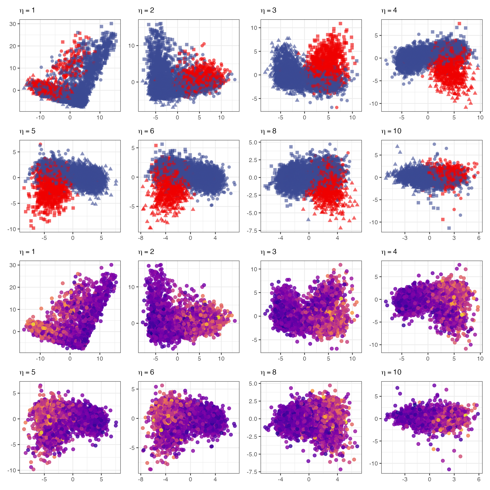
# ggsave("../inst/SavedFigures/ECCITE_eta_sensitivity.pdf",
# plot = final_grid,
# width = 12, height = 12)To evaluate the efficacy of Contrastive PCA (cPCA), we compared it against two standard nuisance regression approaches. These methods represent alternative strategies for handling dominant background variation (such as the cell cycle) without using the specific contrastive optimization function of cPCA.
This method represents a standard “unsupervised” approach often used when control data is unavailable or disregarded during the feature extraction phase. It operates on the assumption that the dominant sources of variation in the target dataset () are technical confounders, while the biological signal of interest is contained in lower-variance components.
Implementation:
Perform standard PCA on the target data matrix .
Identify the top principal components (e.g., ) under the assumption that they capture the dominant cell cycle effect
Reconstruct the data matrix using only these top components to create a “noise approximation.”
Subtract this noise approximation from the original data to obtain residual data ().
Perform PCA on to visualize the remaining variation.
Potential Drawbacks:
This method relies entirely on variance magnitude. If the biological perturbation (e.g., IFNGR1 knockout) induces a strong transcriptomic change, that signal will likely be captured in the top principal components. Regressing out the top PCs would inadvertently remove the primary biological signal of interest alongside the confounders. In other words, it’s difficult to determine a correct that removes nuisance variation without also removing the interesting biological signal.
This method is a “supervised” extension of nuisance regression. Instead of guessing which components in the target data are noise, it utilizes the ancillary (Non-Targeting) data () to explicitly learn the structure of the background variation.
Implementation:
Perform standard PCA on the ancillary data matrix to obtain the eigenvectors (loadings) representing the background structure (e.g., the cell cycle axes).
Select the top eigenvectors () that explain the majority of the variance in .
Project the target data onto these ancillary eigenvectors to calculate the “background score” for each target cell.
Reconstruct the background component within the target data and subtract it to obtain .
Perform PCA on .
Potential Drawbacks:
Same to target-based nuisance regression, the success of this method depends heavily on the choice of (the number of PCs to remove). Removing too few leaves residual cell cycle noise; removing too many may subtract dimensions that are shared between the cell cycle and the treatment response, potentially distorting the biological signal.
In addition, unlike cPCA, which uses a continuous hyperparameter () to weigh the trade-off between target and background variance, this method performs orthogonal projection. It forces the resulting signal to be strictly orthogonal to the control’s variation, which may be too restrictive if the biological signal is not perfectly orthogonal to the cell cycle.
# Define the K values to iterate over
k_values <- c(1, 2, 5, 10)
# Lists to store plots
plots_m1 <- list() # Target-Only
plots_m2 <- list() # Ancillary-Based
# Pre-calculate PCAs needed for the loop to save time
pca_t_full <- prcomp(Xt, center = FALSE, scale. = FALSE)
pca_a_full <- prcomp(Xa, center = FALSE, scale. = FALSE)
# Loop through each k value
for (k in k_values) {
# ==========================================================================
# Method 1: Target-Only Nuisance Regression
# ==========================================================================
# 1. Identify Noise (Top k PCs of Target)
loadings_noise_t <- pca_t_full$rotation[, 1:k, drop = FALSE] # drop=FALSE prevents vector conversion if k=1
# 2. Reconstruct Noise & Subtract
# Noise = (Xt * Loadings) * t(Loadings)
scores_noise_t <- Xt %*% loadings_noise_t
noise_matrix_t <- scores_noise_t %*% t(loadings_noise_t)
Xt_resid_1 <- Xt - noise_matrix_t
# 3. Final PCA on Residuals
pca_m1 <- prcomp(Xt_resid_1, center = FALSE, scale. = FALSE)
# 4. Prepare Data
df_m1 <- data.frame(
PC1 = pca_m1$x[,1],
PC2 = pca_m1$x[,2],
Treatment_Gene = meta_t$Treatment_Gene,
Phase = meta_t$Phase
) %>%
mutate(Functional = case_when(
Treatment_Gene == "IRF1" ~ "Downstream",
Treatment_Gene %in% c("IFNGR1", "IFNGR2", "JAK2", "STAT1") ~ "Upstream",
TRUE ~ "Other"),
Functional = factor(Functional, levels = c("Upstream", "Downstream", "Other"))
)
df_m1$Clusters <- factor(kmeans(df_m1[, c("PC1","PC2")], centers = 3)$cluster)
# 5. Plot
p1 <- ggplot(df_m1, aes(x = PC1, y = PC2, color = Functional, shape = Phase)) +
geom_point(alpha = 0.6, size = 2) +
theme_bw() +
labs(title = bquote("Target-based (" * kappa == .(k) * ")"),
subtitle = NULL) +
theme(legend.position = "none",
axis.title = element_blank(), # Clean up axes for grid
plot.title = element_text(size=10))+
scale_color_aaas()+
scale_shape_manual(
values = c(
"G1" = 1,
"G2M" = 2,
"S" = 0
))
plots_m1[[as.character(k)]] <- p1
# ==========================================================================
# Method 2: Ancillary-Based Nuisance Regression
# ==========================================================================
# 1. Extract Noise Vectors (Top k PCs of Ancillary/NT)
vectors_noise_a <- pca_a_full$rotation[, 1:k, drop = FALSE]
# 2. Project Target onto Noise Vectors & Subtract
projection_scores <- Xt %*% vectors_noise_a
noise_in_Xt <- projection_scores %*% t(vectors_noise_a)
Xt_resid_2 <- Xt - noise_in_Xt
# 3. Final PCA on Residuals
pca_m2 <- prcomp(Xt_resid_2, center = FALSE, scale. = FALSE)
# 4. Prepare Data
df_m2 <- data.frame(
PC1 = pca_m2$x[,1],
PC2 = pca_m2$x[,2],
Treatment_Gene = meta_t$Treatment_Gene,
Phase = meta_t$Phase
) %>%
mutate(Functional = case_when(
Treatment_Gene == "IRF1" ~ "Downstream",
Treatment_Gene %in% c("IFNGR1", "IFNGR2", "JAK2", "STAT1") ~ "Upstream",
TRUE ~ "Other"),
Functional = factor(Functional, levels = c("Upstream", "Downstream", "Other"))
)
df_m2$Clusters <- factor(kmeans(df_m2[, c("PC1","PC2")], centers = 3)$cluster)
# 5. Plot
p2 <- ggplot(df_m2, aes(x = PC1, y = PC2, color = Functional, shape = Phase)) +
geom_point(alpha = 0.6, size = 2) +
theme_bw() +
labs(title = bquote("Ancillary-based (" * kappa == .(k) * ")"),
subtitle = NULL) +
theme(legend.position = "none", # Hide legend for grid, add back later if needed
axis.title = element_blank(),
plot.title = element_text(size=10))+
scale_color_aaas()+
scale_shape_manual(
values = c(
"G1" = 1,
"G2M" = 2,
"S" = 0
))
plots_m2[[as.character(k)]] <- p2
}
# ==============================================================================
# Arrange Figures (4 Columns x 2 Rows)
# Row 1: Target-Only (k=1, 2, 5, 10)
# Row 2: Ancillary-Based (k=1, 2, 5, 10)
# ==============================================================================
# Combine all plots into a single list in the correct order
all_plots_comp <- c(plots_m1, plots_m2)
# Use patchwork to arrange
# layout: 2 rows, 4 columns
final_grid_comp <- wrap_plots(all_plots_comp, ncol = 4, nrow = 2)
print(final_grid_comp)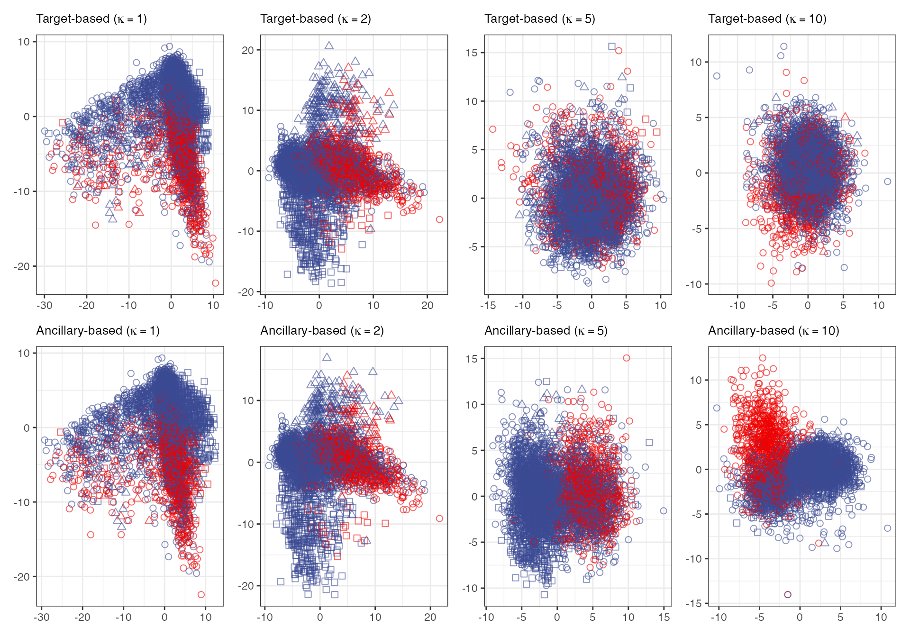
# ggsave("../inst/SavedFigures/ECCITE_comparison.pdf",
# plot = final_grid_comp,
# width = 12, height = 8)We used a published longitudinal chicken gut microbiome dataset to study antibiotic-associated changes during Campylobacter jejuni infection. The original experiment examined whether enrofloxacin treatment alters the gut microbial and metabolic environment in ways that may favor the persistence of resistant C. jejuni.
Biological context:
Broiler chickens infected with C. jejuni.
Study objective:
To evaluate how enrofloxacin treatment affects gut
microbial and metabolic dynamics during infection.
Experimental design:
Longitudinal sampling:
Cecal contents were collected at 2, 7, 12, and 17 days
post-treatment
Analytical motivation:
Because broiler chickens undergo rapid gut maturation,
host development, and microbial
succession, this dataset provides a useful setting for
separating antibiotic-associated microbial and metabolic
changes from background developmental variation.
We used 84_taxon_percent_report_tr_0.5pct.txt as the
microbiome relative abundance percentage table after filtering out
species with less than 0.5% abundance in all samples. For the metabolome
data, we used IOST-02-21VW+ DATA TABLES, UPDATED.xlsx,
including the Chemical Annotation,
Sample Meta Data, and Log Transformed Data
sheets.
After matching the microbiome and metabolome samples, the common samples included 6 baseline samples and 73 other samples. We used only the 73 non-baseline samples for downstream analysis.
The final microbiome data frame contains 73 samples × 591 species. One additional species was added so that the sum of each sample equals 1. The microbiome data were transformed back to relative abundance instead of percentage.
The sample information and feature group information are summarized below.
Note that the microbiome data are relative
abundances, while the metabolome data are
log-transformed values. For microbiome data, we applied
the centered log-ratio transformation using
compositions::clr, which replaces zeros with 1 and divides
each relative abundance value by the geometric mean before taking the
log. For metabolome data, we directly used the provided log-transformed
values.
print(knitr::kable(table(meta_dat$TREATMENT, meta_dat$Time), caption="Sample groups"))
#>
#>
#> Table: Sample groups
#>
#> | | DPT-2| DPT-7| DPT-12| DPT-17|
#> |:-------|-----:|-----:|------:|------:|
#> |Control | 9| 9| 10| 9|
#> |ENRO | 8| 9| 10| 9|
print(knitr::kable(table(mtb_group_known$SUPER_PATHWAY), caption = "Superpathway summary of microbes",col.names = c("Superpathway","Counts")))
#>
#>
#> Table: Superpathway summary of microbes
#>
#> |Superpathway | Counts|
#> |:---------------------------------|------:|
#> |Amino Acid | 218|
#> |Carbohydrate | 40|
#> |Cofactors and Vitamins | 54|
#> |Energy | 11|
#> |Lipid | 261|
#> |Nucleotide | 49|
#> |Partially Characterized Molecules | 10|
#> |Peptide | 36|
#> |Xenobiotics | 114|
X_all <- mtb_dat_known
Y_all <- t(apply(mb_dat, 1, compositions::clr))
target_ids <- rownames(meta_dat)[meta_dat$TREATMENT == "ENRO"]
backgr_ids <- rownames(meta_dat)[meta_dat$TREATMENT == "Control"]
Xt <- X_all[target_ids, ]; Xa <- X_all[backgr_ids, ]
Yt <- Y_all[target_ids, ]; Ya <- Y_all[backgr_ids, ]
meta_t <- meta_dat[target_ids, ]
meta_a <- meta_dat[backgr_ids, ]
keep_x <- get_good_indices(Xt) & get_good_indices(Xa)
keep_y <- get_good_indices(Yt) & get_good_indices(Ya)
Xt <- Xt[, keep_x]; Xa <- Xa[, keep_x]
Yt <- Yt[, keep_y]; Ya <- Ya[, keep_y]
Xt <- scale(Xt); Xa <- scale(Xa)
Yt <- scale(Yt); Ya <- scale(Ya)We apply the s3CA algorithm. The parameter eta controls
the strength of background removal.
Standard CCA (Target Only) captures the dominant variance in the treatment group.
Standard CCA (Ancillary Only) captures the dominant variance in the control group.
Contrastive CCA subtracts the background covariance to reveal unique structures.
res_s3CA <- cCCA(Xa = Xa, Ya = Ya, Xt = Xt, Yt = Yt, eta = NULL,
sparse_ctst = 0.2, sparse_trt = 0.2, sparse_ctrl = 0.2)
#>
#> optimal eta is 1.03231849681109
CCA_ctrl <- res_s3CA$CCA_ctrl
CCA_trt <- res_s3CA$CCA_trt
CCA_ctst <- res_s3CA$CCA_ctstThe leading treatment component is expected to emphasize the strongest treatment-specific mean structure. In this dataset, it primarily separates the acute DPT-2 samples from later time points. The second treatment component follows a smoother temporal trajectory. A similar trajectory appears in the first control component, motivating removal of longitudinal cross-modal structure represented in the ancillary population.
The score plots may optionally combine DPT-12 and DPT-17 into a
single late label by setting merge_late <- TRUE in the
setup chunk. The trajectory correlations below always use the original
four time points.
merge_late <- FALSE
df_trt_c1 <- score_frame(
Xt, Yt, CCA_trt$u, CCA_trt$v, meta_t,
component = 1,
x_name = "CCX1", y_name = "CCY1",
merge_late = merge_late
)
df_trt_c1$cluster <- spec_clust(df_trt_c1[,1:2], k=2, group = df_trt_c1$Time)$cluster
df_trt_c2 <- score_frame(
Xt, Yt, CCA_trt$u, CCA_trt$v, meta_t,
component = 2,
x_name = "CCX2", y_name = "CCY2",
merge_late = merge_late
)
df_trt_c2$cluster <- spec_clust(df_trt_c2[,1:2], k=3, group = df_trt_c2$Time)$cluster
df_ctrl_c1 <- score_frame(
Xa, Ya, CCA_ctrl$u, CCA_ctrl$v, meta_a,
component = 1,
x_name = "CCX1", y_name = "CCY1",
merge_late = merge_late
)
df_ctrl_c1$cluster <- spec_clust(df_ctrl_c1[,1:2], k=3, group = df_ctrl_c1$Time)$cluster
p_trt_c1 <- plot_score_pair(
df_trt_c1, "CCX1", "CCY1",
"Treatment pair 1",
"Mtb score 1",
"Mb score 1"
)
p_trt_c2 <- plot_score_pair(
df_trt_c2, "CCX2", "CCY2",
"Treatment pair 2",
"Mtb score 2",
"Mb score 2"
)
p_ctrl_c1 <- plot_score_pair(
df_ctrl_c1, "CCX1", "CCY1",
"Control pair 1",
"Mtb score 1",
"Mb score 1"
)
# p_motivation <- ggarrange(
# p_trt_c1, p_trt_c2, p_ctrl_c1,
# nrow = 1,
# common.legend = TRUE,
# legend = "bottom",
# labels = "AUTO"
# )
# print(p_motivation)
## Extract the complete legend from a plot that contains all three clusters
shared_legend <- cowplot::get_legend(
p_trt_c2 +
ggplot2::theme(
legend.position = "bottom",
legend.box = "horizontal",
legend.margin = ggplot2::margin(
t = 0,
r = 0,
b = 0,
l = 0
)
)
)
## Arrange plots in the original order without individual legends
plot_row <- ggpubr::ggarrange(
p_trt_c1 + ggplot2::theme(legend.position = "none"),
p_trt_c2 + ggplot2::theme(legend.position = "none"),
p_ctrl_c1 + ggplot2::theme(legend.position = "none"),
ncol = 3,
nrow = 1,
labels = c("A", "B", "C"),
align = "hv"
)
## Add the shared legend below
final_plot <- cowplot::plot_grid(
plot_row,
shared_legend,
ncol = 1,
rel_heights = c(1, 0.10)
)
final_plot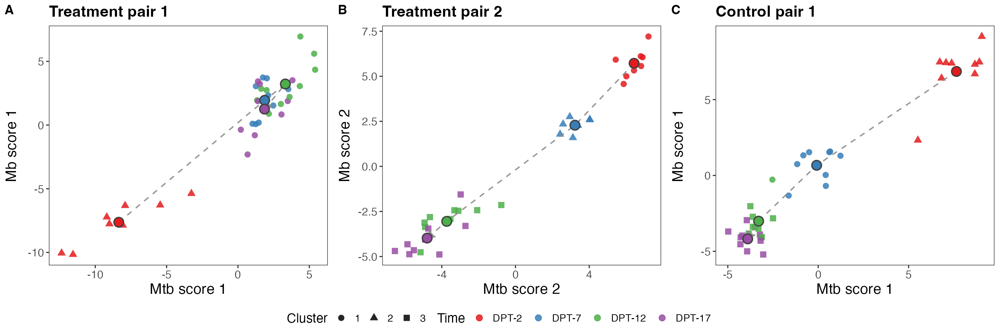
# motivation_file <- file.path(
# "../inst/SavedFigures",
# if (merge_late) {
# "Chicken_motivation_scores_late_merged.pdf"
# } else {
# "Chicken_motivation_scores.pdf"
# }
# )
# ggsave(
# motivation_file,
# plot = final_plot,
# width = 15,
# height = 5
# )
# cat("Saved motivation figure to:", motivation_file, "\n")The temporal concordance is summarized using Pearson correlations between the four DPT-specific score centroids from treatment component 2 and control component 1. Because the comparison uses only four time points, the correlations are descriptive and should be interpreted together with the score plots.
scoreX_trt <- Xt %*% as.matrix(CCA_trt$u)
scoreY_trt <- Yt %*% as.matrix(CCA_trt$v)
scoreX_ctrl <- Xa %*% as.matrix(CCA_ctrl$u)
scoreY_ctrl <- Ya %*% as.matrix(CCA_ctrl$v)
dpt_trt <- as.character(meta_t$Time)
dpt_ctrl <- as.character(meta_a$Time)
traj_X <- trajectory_correlation(
scoreX_trt[, 2],
scoreX_ctrl[, 1],
dpt_trt,
dpt_ctrl
)
traj_Y <- trajectory_correlation(
scoreY_trt[, 2],
scoreY_ctrl[, 1],
dpt_trt,
dpt_ctrl
)
temporal_correlations <- data.frame(
modality = c("Metabolome", "Microbiome"),
treatment_component = 2,
control_component = 1,
pearson_r = c(traj_X$correlation, traj_Y$correlation),
n_timepoints = c(length(traj_X$common_time), length(traj_Y$common_time))
)
print(temporal_correlations)
#> modality treatment_component control_component pearson_r n_timepoints
#> 1 Metabolome 2 1 0.9234551 4
#> 2 Microbiome 2 1 0.9752247 4
cat(sprintf(
paste0(
"Temporal centroid correlation: metabolome r = %.3f; ",
"microbiome r = %.3f.\n"
),
traj_X$correlation,
traj_Y$correlation
))
#> Temporal centroid correlation: metabolome r = 0.923; microbiome r = 0.975.Interpretation. The first treatment pair is dominated by the acute DPT-2 separation, whereas the second treatment pair shows a temporal organization strongly concordant with the leading control pair. This supports the presence of a shared sample-level temporal pattern at different spectral ranks. It does not require the sparse loading vectors to be identical.
Sparse solutions may use different correlated features to represent similar sample trajectories. We therefore treat loading alignment as a supplementary diagnostic rather than the primary evidence for temporal concordance.
u_ctrl <- CCA_ctrl$u
v_ctrl <- CCA_ctrl$v
u_trt <- CCA_trt$u
v_trt <- CCA_trt$v
K <- min(5, ncol(u_trt), ncol(v_trt))
alignment_df <- lapply(seq_len(K), function(k) {
cos_u <- safe_cosine(u_ctrl[, 1], u_trt[, k])
cos_v <- safe_cosine(v_ctrl[, 1], v_trt[, k])
data.frame(
treatment_component = paste0("Treatment C", k),
Metabolome = cos_u,
Microbiome = cos_v,
Joint = cos_u * cos_v
)
}) |>
bind_rows()
alignment_long <- alignment_df |>
pivot_longer(
cols = c(Metabolome, Microbiome, Joint),
names_to = "alignment_type",
values_to = "cosine_similarity"
) |>
mutate(
treatment_component = factor(
treatment_component,
levels = paste0("Treatment C", seq_len(K))
),
alignment_type = factor(
alignment_type,
levels = c("Metabolome", "Microbiome", "Joint")
)
)
p_alignment <- ggplot(
alignment_long,
aes(
x = treatment_component,
y = alignment_type,
fill = cosine_similarity
)
) +
geom_tile(color = "white", linewidth = 0.8) +
geom_text(
aes(label = sprintf("%.2f", cosine_similarity)),
size = 4
) +
scale_fill_gradient(
low = "white",
high = "steelblue",
limits = c(0, 1),
name = "Absolute\ncosine similarity"
) +
labs(
x = "Treatment component",
y = NULL,
title = "Alignment with control component 1",
subtitle = "Cosine similarity of sparse loading vectors"
) +
theme_classic(base_size = 12) +
theme(
plot.title = element_text(face = "bold"),
axis.text.x = element_text(angle = 0, hjust = 0.5)
)
print(p_alignment)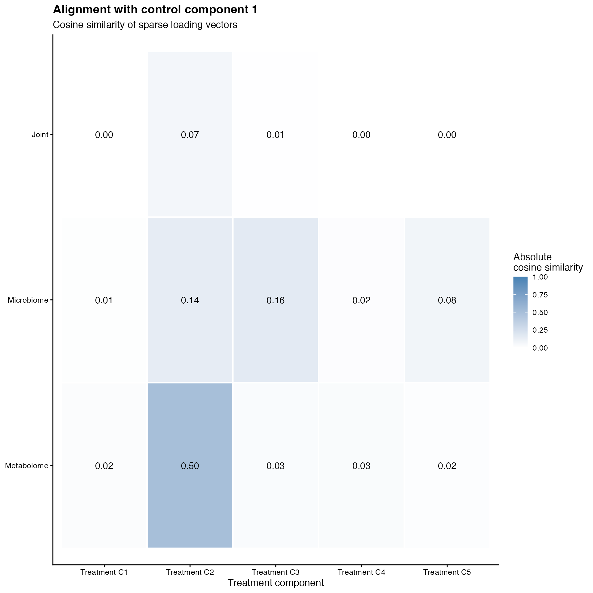
# alignment_file <- file.path(
# "../inst/SavedFigures",
# "Chicken_supp_loading_alignment_heatmap.pdf"
# )
# ggsave(
# alignment_file,
# plot = p_alignment,
# width = 10,
# height = 5
# )
# cat("Saved supplementary alignment heatmap to:", alignment_file, "\n")The contrastive analysis retains the large acute DPT-2 structure while reducing cross-modal variation represented in the untreated controls. The leading contrastive score pair can therefore place greater emphasis on post-acute treatment structure, including the separation of DPT-7 from DPT-12/17.
df_ctst_c1 <- score_frame(
Xt, Yt, CCA_ctst$u, CCA_ctst$v, meta_t,
component = 1,
x_name = "cCCX1", y_name = "cCCY1",
merge_late = merge_late
)
df_ctst_c1$cluster <- spec_clust(df_ctst_c1[,1:2], k=3, group = df_ctst_c1$Time)$cluster
p_ctst <- plot_score_pair(
df_ctst_c1,
"cCCX1", "cCCY1",
"",
"Contrastive mtb score 1",
"Contrastive mb score 1"
)
print(p_ctst)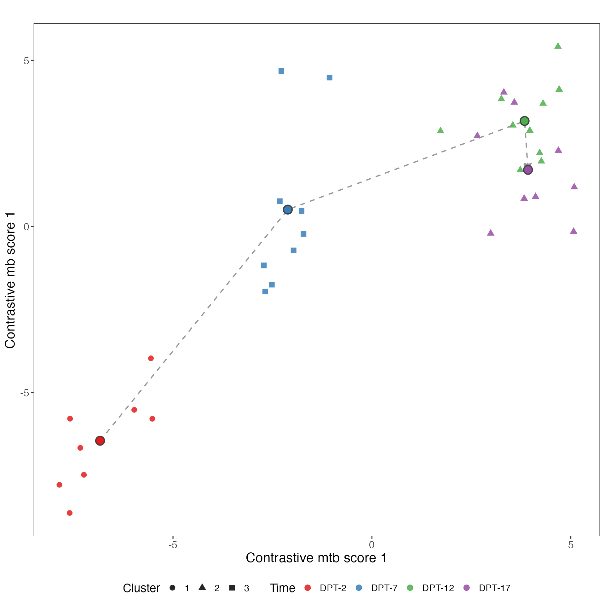
# contrastive_file <- file.path(
# "../inst/SavedFigures",
# if (merge_late) {
# "Chicken_contrastive_score_late_merged.pdf"
# } else {
# "Chicken_contrastive_score.pdf"
# }
# )
# ggsave(
# contrastive_file,
# plot = p_ctst,
# width = 7.5,
# height = 6
# )
# cat("Saved contrastive score plot to:", contrastive_file, "\n")Interpretation. The contrastive score plot should be read as a joint two-dimensional representation: the horizontal coordinate is the metabolome score and the vertical coordinate is the microbiome score from the same singular-vector pair. Distinct time-specific centroids therefore indicate coordinated differences across both modalities.
We next inspect features selected by the first contrastive component. Features are ranked by the absolute loading magnitude, but the signed loading is retained in the output table.
mtb_loadings_ctst <- get_sorted_loadings(
CCA_ctst$u,
colnames(Xt),
component = 1
)
mb_loadings_ctst <- get_sorted_loadings(
CCA_ctst$v,
colnames(Yt),
component = 1
)
top_n_mtb <- min(10, length(mtb_loadings_ctst))
top_n_mb <- min(10, length(mb_loadings_ctst))
selected_mtb <- head(mtb_loadings_ctst, top_n_mtb)
selected_mb <- head(mb_loadings_ctst, top_n_mb)
cat("Selected metabolites from contrastive component 1:\n")
#> Selected metabolites from contrastive component 1:
print(selected_mtb)
#> Glutamate Metabolism.12
#> -0.3359219
#> Purine Metabolism, (Hypo)Xanthine/Inosine containing.7
#> -0.2964273
#> Polyamine Metabolism.10
#> -0.2822602
#> Food Component/Plant.42
#> -0.2751155
#> Food Component/Plant.36
#> 0.2479595
#> Food Component/Plant.24
#> -0.2409605
#> Urea cycle; Arginine and Proline Metabolism.23
#> 0.2242929
#> Partially Characterized Molecules.2
#> -0.2240514
#> Gamma-glutamyl Amino Acid.9
#> 0.1989601
#> Food Component/Plant.6
#> -0.1849879
cat("\nSelected microbiome features from contrastive component 1:\n")
#>
#> Selected microbiome features from contrastive component 1:
print(selected_mb)
#> Citrobacter rodentium Marvinbryantia formatexigens
#> 0.3499455 -0.3135394
#> Sphaerochaeta associata Blautia liquoris
#> -0.3089393 -0.2826300
#> Citrobacter farmeri Citrobacter amalonaticus
#> 0.2668364 0.2624910
#> Citrobacter sp..MGH.55 Eggerthella guodeyinii
#> 0.2501678 0.2134631
#> Arabiibacter massiliensis Citrobacter freundii.complex.sp..CFNIH2
#> 0.2004680 0.1956811
selected_feature_table <- bind_rows(
data.frame(
feature = names(selected_mtb),
loading = as.numeric(selected_mtb),
modality = "Metabolome"
),
data.frame(
feature = names(selected_mb),
loading = as.numeric(selected_mb),
modality = "Microbiome"
)
)
# write.csv(
# selected_feature_table,
# file.path("../inst/SavedFigures", "Chicken_contrastive_selected_features.csv"),
# row.names = FALSE
# )The heatmaps display the mean abundance of each selected feature at each of the four original time points. Each row is standardized across time, so the colors describe the temporal pattern of a feature rather than its absolute abundance relative to other features.
## Contrastive C1 temporal feature heatmaps
top_n_heatmap <- 10
time_order <- c("DPT-2", "DPT-7", "DPT-12", "DPT-17")
mtb_loadings_ctst <- get_top_loadings(
CCA_ctst$u,
colnames(Xt),
component = 1,
top_n = top_n_heatmap
)
mb_loadings_ctst <- get_top_loadings(
CCA_ctst$v,
colnames(Yt),
component = 1,
top_n = top_n_heatmap
)
mat_mtb_ctst <- make_temporal_matrix(
Xt,
meta_t,
names(mtb_loadings_ctst)
)
mat_mb_ctst <- make_temporal_matrix(
Yt,
meta_t,
names(mb_loadings_ctst)
)
## Wrap long feature names onto multiple lines
wrap_labels <- function(x, width = 28) {
vapply(
x,
function(label) {
paste(strwrap(label, width = width), collapse = "\n")
},
character(1)
)
}
mtb_labels <- wrap_labels(rownames(mat_mtb_ctst), width = 28)
mb_labels <- wrap_labels(rownames(mat_mb_ctst), width = 28)
ph_mtb <- pheatmap(
mat_mtb_ctst,
cluster_rows = TRUE,
cluster_cols = FALSE,
display_numbers = FALSE,
color = colorRampPalette(c("white", "navy"))(50),
labels_row = mtb_labels,
main = "Contrastive C1 – Metabolome",
fontsize_row = 11,
fontsize_col = 10,
angle_col = 0,
border_color = NA,
legend = TRUE,
silent = TRUE
)
ph_mb <- pheatmap(
mat_mb_ctst,
cluster_rows = TRUE,
cluster_cols = FALSE,
display_numbers = FALSE,
color = colorRampPalette(c("white", "firebrick3"))(50),
labels_row = mb_labels,
main = "Contrastive C1 – Microbiome",
fontsize_row = 11,
fontsize_col = 10,
angle_col = 0,
border_color = NA,
legend = TRUE,
silent = TRUE
)
combined_heatmap <- arrangeGrob(
ph_mtb$gtable,
ph_mb$gtable,
ncol = 2
)
grid.newpage()
grid.draw(combined_heatmap)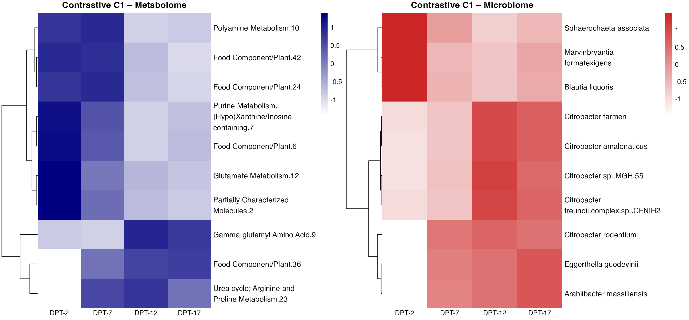
# combined_file <- file.path(
# "../inst/SavedFigures",
# "Chicken_contrastive_feature_heatmaps.pdf"
# )
# pdf(combined_file, width = 14, height = 6.5)
# grid.newpage()
# grid.draw(combined_heatmap)
# dev.off()
# cat("Saved combined contrastive heatmap to:", combined_file, "\n")Interpretation. These heatmaps describe how the selected features contribute to the contrastive temporal organization. They should not be interpreted as causal microbe–metabolite interactions. The main result is that the selected metabolites and microbial features jointly distinguish the acute, intermediate, and later treatment states.
## Treatment-only component 1
mtb_loadings_trt <- get_top_loadings(
CCA_trt$u,
colnames(Xt),
component = 1,
top_n = top_n_heatmap
)
mb_loadings_trt <- get_top_loadings(
CCA_trt$v,
colnames(Yt),
component = 1,
top_n = top_n_heatmap
)
mat_mtb_trt <- make_temporal_matrix(
Xt,
meta_t,
names(mtb_loadings_trt)
)
mat_mb_trt <- make_temporal_matrix(
Yt,
meta_t,
names(mb_loadings_trt)
)
mtb_labels_trt <- wrap_labels(
rownames(mat_mtb_trt),
width = 28
)
mb_labels_trt <- wrap_labels(
rownames(mat_mb_trt),
width = 28
)
ph_mtb_trt <- pheatmap(
mat_mtb_trt,
cluster_rows = TRUE,
cluster_cols = FALSE,
display_numbers = FALSE,
color = colorRampPalette(c("white", "navy"))(50),
labels_row = mtb_labels_trt,
main = "Treatment C1 – Metabolome",
fontsize_row = 11,
fontsize_col = 10,
angle_col = 0,
border_color = NA,
legend = TRUE,
silent = TRUE
)
ph_mb_trt <- pheatmap(
mat_mb_trt,
cluster_rows = TRUE,
cluster_cols = FALSE,
display_numbers = FALSE,
color = colorRampPalette(c("white", "firebrick3"))(50),
labels_row = mb_labels_trt,
main = "Treatment C1 – Microbiome",
fontsize_row = 11,
fontsize_col = 10,
angle_col = 0,
border_color = NA,
legend = TRUE,
silent = TRUE
)
combined_heatmap_trt <- arrangeGrob(
ph_mtb_trt$gtable,
ph_mb_trt$gtable,
ncol = 2
)
grid.newpage()
grid.draw(combined_heatmap_trt)
# treatment_file <- file.path(
# "../inst/SavedFigures",
# "Chicken_treatment_feature_heatmaps.pdf"
# )
#
# pdf(treatment_file, width = 14, height = 6.5)
# grid.newpage()
# grid.draw(combined_heatmap_trt)
# dev.off()
## Control-only component 1
mtb_loadings_ctrl <- get_top_loadings(
CCA_ctrl$u,
colnames(Xa),
component = 1,
top_n = top_n_heatmap
)
mb_loadings_ctrl <- get_top_loadings(
CCA_ctrl$v,
colnames(Ya),
component = 1,
top_n = top_n_heatmap
)
mat_mtb_ctrl <- make_temporal_matrix(
Xa,
meta_a,
names(mtb_loadings_ctrl)
)
mat_mb_ctrl <- make_temporal_matrix(
Ya,
meta_a,
names(mb_loadings_ctrl)
)
mtb_labels_ctrl <- wrap_labels(
rownames(mat_mtb_ctrl),
width = 28
)
mb_labels_ctrl <- wrap_labels(
rownames(mat_mb_ctrl),
width = 28
)
ph_mtb_ctrl <- pheatmap(
mat_mtb_ctrl,
cluster_rows = TRUE,
cluster_cols = FALSE,
display_numbers = FALSE,
color = colorRampPalette(c("white", "navy"))(50),
labels_row = mtb_labels_ctrl,
main = "Control C1 – Metabolome",
fontsize_row = 11,
fontsize_col = 10,
angle_col = 0,
border_color = NA,
legend = TRUE,
silent = TRUE
)
ph_mb_ctrl <- pheatmap(
mat_mb_ctrl,
cluster_rows = TRUE,
cluster_cols = FALSE,
display_numbers = FALSE,
color = colorRampPalette(c("white", "firebrick3"))(50),
labels_row = mb_labels_ctrl,
main = "Control C1 – Microbiome",
fontsize_row = 11,
fontsize_col = 10,
angle_col = 0,
border_color = NA,
legend = TRUE,
silent = TRUE
)
combined_heatmap_ctrl <- arrangeGrob(
ph_mtb_ctrl$gtable,
ph_mb_ctrl$gtable,
ncol = 2
)
grid.newpage()
grid.draw(combined_heatmap_ctrl)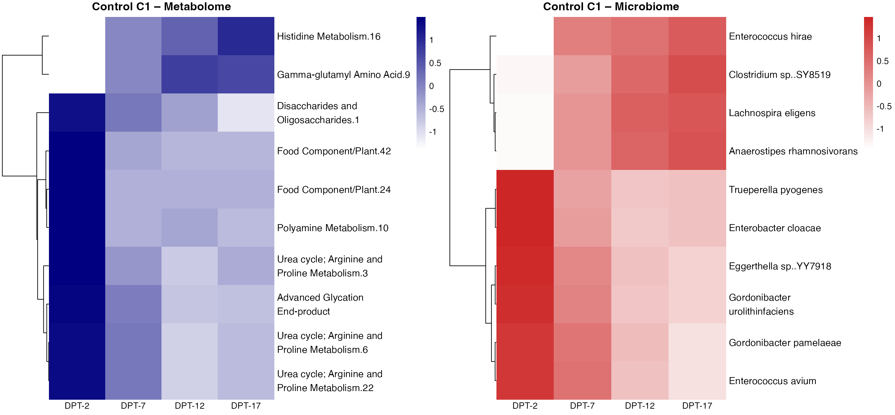
# control_file <- file.path(
# "../inst/SavedFigures",
# "Chicken_control_feature_heatmaps.pdf"
# )
#
# pdf(control_file, width = 14, height = 6.5)
# grid.newpage()
# grid.draw(combined_heatmap_ctrl)
# dev.off()A unimodal analysis can identify strong variation within the metabolome or microbiome, but it does not require the same sample groups to differ coherently in both data types. In contrast, s3CA estimates paired loading vectors and prioritizes structures for which the metabolome and microbiome scores vary together after ancillary adjustment.
The following diagnostic compares the fraction of score variation attributable to the displayed time groups in:
This is a descriptive summary, not a formal proof that multimodal analysis is universally superior.
## Fit contrastive PCA separately to each modality
cpca_mtb <- fit_cpca(
target_data = Xt,
ancillary_data = Xa,
n_components = 2
)
cpca_mb <- fit_cpca(
target_data = Yt,
ancillary_data = Ya,
n_components = 2
)
cat(sprintf(
"Metabolome cPCA scaling parameter: %.6f\n",
cpca_mtb$alpha
))
#> Metabolome cPCA scaling parameter: 1.121473
cat(sprintf(
"Microbiome cPCA scaling parameter: %.6f\n",
cpca_mb$alpha
))
#> Microbiome cPCA scaling parameter: 0.835587
cat(
"Metabolome contrastive eigenvalues:",
paste(round(cpca_mtb$values, 4), collapse = ", "),
"\n"
)
#> Metabolome contrastive eigenvalues: 108.5054, 73.8009
cat(
"Microbiome contrastive eigenvalues:",
paste(round(cpca_mb$values, 4), collapse = ", "),
"\n"
)
#> Microbiome contrastive eigenvalues: 144.212, 71.7956
df_cpca_mtb <- data.frame(
cPC1 = cpca_mtb$scores[, 1],
cPC2 = cpca_mtb$scores[, 2],
meta_t,
check.names = FALSE
)
df_cpca_mb <- data.frame(
cPC1 = cpca_mb$scores[, 1],
cPC2 = cpca_mb$scores[, 2],
meta_t,
check.names = FALSE
)
df_cpca_mtb$Time_raw <- as.character(df_cpca_mtb$Time)
df_cpca_mb$Time_raw <- as.character(df_cpca_mb$Time)
df_cpca_mtb$Time_plot <- make_time_label(
df_cpca_mtb$Time,
merge_late = merge_late
)
df_cpca_mb$Time_plot <- make_time_label(
df_cpca_mb$Time,
merge_late = merge_late
)
p_cpca_mtb <- plot_score_pair(
df_cpca_mtb,
x = "cPC1",
y = "cPC2",
title = "Metabolome-only cPCA",
x_label = "Contrastive PC1",
y_label = "Contrastive PC2",
show_centroid_labels = FALSE
)
p_cpca_mb <- plot_score_pair(
df_cpca_mb,
x = "cPC1",
y = "cPC2",
title = "Microbiome-only cPCA",
x_label = "Contrastive PC1",
y_label = "Contrastive PC2",
show_centroid_labels = FALSE
)
p_s3ca_joint <- plot_score_pair(
df_ctst_c1,
x = "cCCX1",
y = "cCCY1",
title = "Joint microbiome–metabolome s3CA",
x_label = "Contrastive metabolome score",
y_label = "Contrastive microbiome score",
show_centroid_labels = FALSE
)
p_multimodal_comparison <- ggarrange(
p_cpca_mtb,
p_cpca_mb,
p_s3ca_joint,
nrow = 1,
common.legend = TRUE,
legend = "bottom"
)
#> Ignoring unknown labels:
#> • shape : "Cluster"
#> Ignoring unknown labels:
#> • shape : "Cluster"
#> Ignoring unknown labels:
#> • shape : "Cluster"
print(p_multimodal_comparison)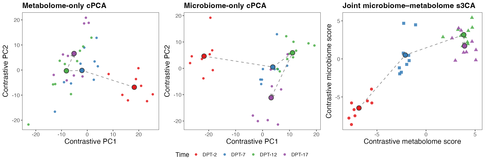
# multimodal_file <- file.path(
# "../inst/SavedFigures",
# if (merge_late) {
# "Chicken_unimodal_cpca_vs_s3ca_late_merged.pdf"
# } else {
# "Chicken_unimodal_cpca_vs_s3ca.pdf"
# }
# )
# ggsave(
# filename = multimodal_file,
# plot = p_multimodal_comparison,
# width = 15,
# height = 5.2
# )
# cat(
# "Saved unimodal cPCA versus multimodal s3CA comparison to:",
# multimodal_file,
# "\n"
# )